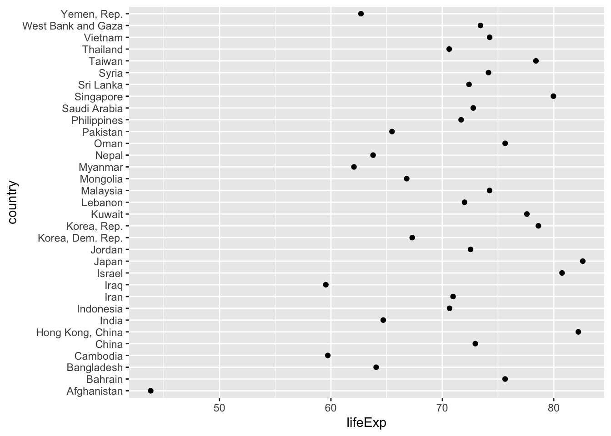
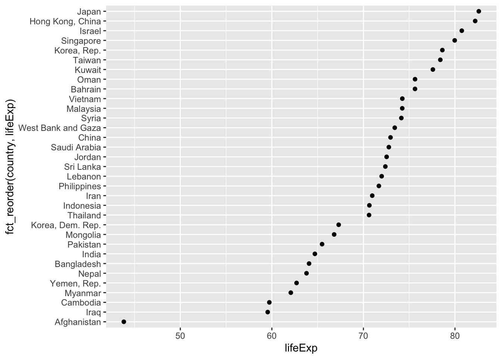
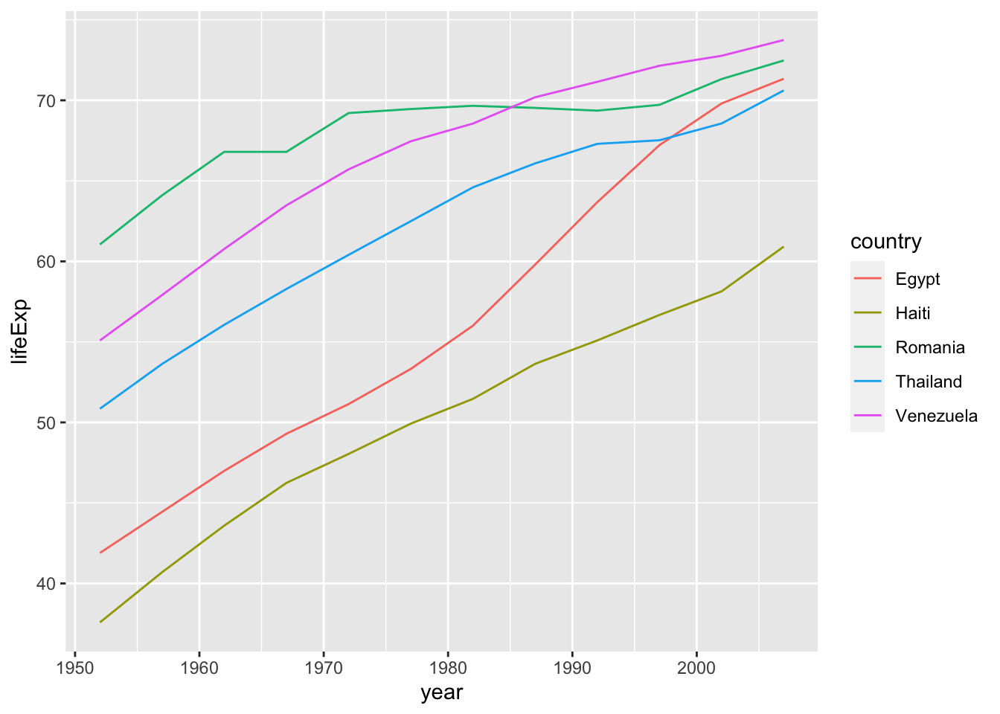
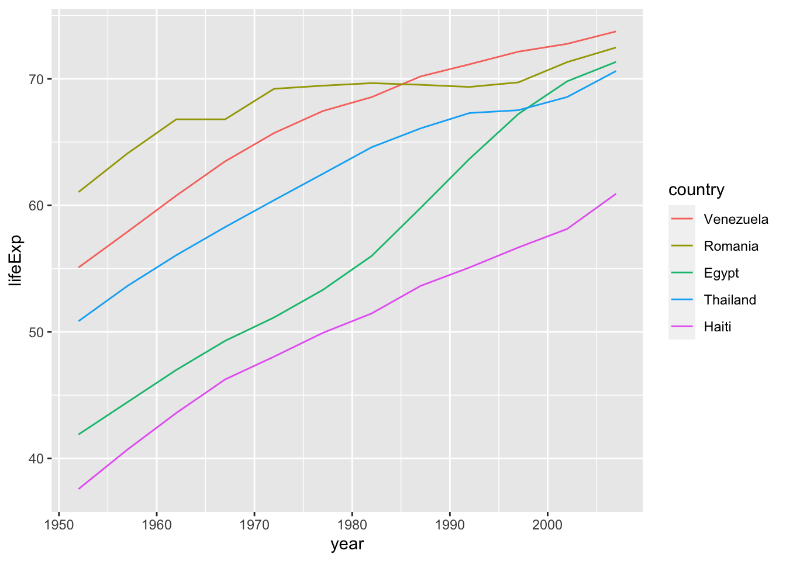

2 Wrangling
Start by loading the packages which we will need in this chapter.
library(tidyverse)
library(primer.data)
library(lubridate)
library(skimr)
library(janitor)
library(gapminder)
library(nycflights13)
library(fivethirtyeight)The tidyverse package will be used in every chapter. primer.data is the data package created specifically for this course. lubridate is a package for working with dates and times. janitor offers functions for cleaning up dirty data. skimr contains functions that are useful for providing summary statistics. nycflights includes data associated with flights out of New York City’s three major airports. gapminder has data for countries across decades. fivethirtyeight cleans up data from the FiveThirtyEight team.
2.1 Data Gathering
Recall the read_csv() function introduced briefly in chapter 1 of this textbook. Let’s import a Comma Separated Values .csv file that exists on the internet. The .csv file dem_score.csv contains ratings of the level of democracy in different countries spanning 1952 to 1992 and is accessible at https://moderndive.com/data/dem_score.csv. Let’s use the read_csv() function from the readr package to read it off the web, import it into R, and save it in a data frame called dem_score.
dem_score <- read_csv(file = "https://moderndive.com/data/dem_score.csv")##
## ── Column specification ────────────────────────────────────────────────────────
## cols(
## country = col_character(),
## `1952` = col_double(),
## `1957` = col_double(),
## `1962` = col_double(),
## `1967` = col_double(),
## `1972` = col_double(),
## `1977` = col_double(),
## `1982` = col_double(),
## `1987` = col_double(),
## `1992` = col_double()
## )In this dem_score data frame, the minimum value of -10 corresponds to a highly autocratic nation, whereas a value of 10 corresponds to a highly democratic nation. Note also that backticks surround the different variable names. Variable names in R by default are not allowed to start with a number nor include spaces, but we can get around this fact by surrounding the column name with backticks.
Note that the read_csv() function included in the readr package is different than the read.csv() function that comes installed with R. While the difference in the names might seem trivial (an _ instead of a .), the read_csv() function is, in our opinion, easier to use since it can more easily read data off the web and generally imports data at a much faster speed. Furthermore, the read_csv() function included in the readr saves data frames as tibbles by default.
The result of this code chunk is pretty tame. It tells us that each comma from the .csv file corresponds to a column, and the column names are taken from the first line of the file. Then, the function “guesses” an appropriate data type for each of the columns it creates. Sometimes .csv files are a lot dirtier and require significant wrangling before you can explore the data and create usable graphics.
Let’s try to run read_csv() on another dataset. This is a link to a file containing the faculty’s gender data across departments at Harvard University. Note, the file argument of the read_csv() function can take the link to a dataset in a number of forms. In the previous example and the one below, the file argument takes a url. Other formats that this argument could take are full or partial file paths for .csv files saved locally on your computer.
url <- "https://raw.githubusercontent.com/davidkane9/PPBDS/master/02-wrangling/data/harvard-faculty-gender-final.csv"
gender_data <- read_csv(file = url)## Warning: Missing column names filled in: 'X1' [1], 'X2' [2], 'X3' [3], 'X4' [4],
## 'X5' [5], 'X6' [6], 'X7' [7], 'X8' [8], 'X9' [9], 'X10' [10], 'X11' [11],
## 'X12' [12]##
## ── Column specification ────────────────────────────────────────────────────────
## cols(
## X1 = col_character(),
## X2 = col_character(),
## X3 = col_character(),
## X4 = col_character(),
## X5 = col_character(),
## X6 = col_character(),
## X7 = col_character(),
## X8 = col_character(),
## X9 = col_character(),
## X10 = col_character(),
## X11 = col_character(),
## X12 = col_character()
## )Now, call gender_data.
gender_data## # A tibble: 46 x 12
## X1 X2 X3 X4 X5 X6 X7 X8 X9 X10 X11 X12
## <chr> <chr> <chr> <chr> <chr> <chr> <chr> <chr> <chr> <chr> <chr> <chr>
## 1 concen… full_… full_… assoc… assoc… asst… asst… lec_… lec_… prof… prof… divi…
## 2 Theate… 0 2 0 0 1 0 0 0 0 1 Arts…
## 3 Women,… 1 5 0 0 0 1 1 9 1 0 Soci…
## 4 Histor… 5 8 2 1 3 1 2 5 0 0 Soci…
## 5 Romanc… 6 9 1 1 1 2 2 11 0 0 Arts…
## 6 Music 6 8 0 0 1 0 5 4 0 2 Arts…
## 7 Africa… 19 15 1 0 1 0 0 0 1 0 Soci…
## 8 History 23 18 0 1 0 0 4 2 0 0 Soci…
## 9 Histor… 11 7 0 1 1 1 0 1 0 0 Arts…
## 10 Psycho… 11 7 1 2 4 2 1 0 0 0 Soci…
## # … with 36 more rowsAs you can see, the second row was likely meant to contain the column names. You can run ?read_csv() in your console to see the additional arguments that the read_csv() function may contain to make the new dataframe easier to work with. The skip argument allows you to skip rows of the dataset.
gender_data <- read_csv(file = url, skip = 1)##
## ── Column specification ────────────────────────────────────────────────────────
## cols(
## concentration = col_character(),
## full_profs_m = col_double(),
## full_profs_f = col_double(),
## assoc_m = col_double(),
## assoc_f = col_double(),
## asst_m = col_double(),
## asst_f = col_double(),
## lec_precep_adj_m = col_double(),
## lec_precep_adj_f = col_double(),
## prof_of_practice_m = col_double(),
## prof_of_practic_f = col_double(),
## division = col_character()
## )
gender_data## # A tibble: 45 x 12
## concentration full_profs_m full_profs_f assoc_m assoc_f asst_m asst_f
## <chr> <dbl> <dbl> <dbl> <dbl> <dbl> <dbl>
## 1 Theater, Dan… 0 2 0 0 1 0
## 2 Women, Gende… 1 5 0 0 0 1
## 3 History of S… 5 8 2 1 3 1
## 4 Romance Lang… 6 9 1 1 1 2
## 5 Music 6 8 0 0 1 0
## 6 African & Af… 19 15 1 0 1 0
## 7 History 23 18 0 1 0 0
## 8 History of A… 11 7 0 1 1 1
## 9 Psychology 11 7 1 2 4 2
## 10 Sociology 11 7 2 0 0 1
## # … with 35 more rows, and 5 more variables: lec_precep_adj_m <dbl>,
## # lec_precep_adj_f <dbl>, prof_of_practice_m <dbl>, prof_of_practic_f <dbl>,
## # division <chr>
Now suppose we want to change the data type of one of more of the columns. The col_type argument allows us to do this. Without the col_type argument, the division column is read in as a character column. Instead, we want it to be read in as a factor.
gender_data <- read_csv(file = url, skip = 1, col_type = cols(division = col_factor()))Now that the new dataset has been read in, explore it using the View() and glimpse() functions and the $ operator from the previous chapter.
View(gender_data)
glimpse(gender_data)## Rows: 45
## Columns: 12
## $ concentration <chr> "Theater, Dance & Media", "Women, Gender, & Sexual…
## $ full_profs_m <dbl> 0, 1, 5, 6, 6, 19, 23, 11, 11, 11, 13, 20, 33, 2, …
## $ full_profs_f <dbl> 2, 5, 8, 9, 8, 15, 18, 7, 7, 7, 8, 11, 17, 1, 2, 2…
## $ assoc_m <dbl> 0, 0, 2, 1, 0, 1, 0, 0, 1, 2, 1, 3, 2, 0, 1, 0, 1,…
## $ assoc_f <dbl> 0, 0, 1, 1, 0, 0, 1, 1, 2, 0, 0, 2, 1, 0, 0, 0, 0,…
## $ asst_m <dbl> 1, 0, 3, 1, 1, 1, 0, 1, 4, 0, 1, 1, 1, 0, 0, 0, 2,…
## $ asst_f <dbl> 0, 1, 1, 2, 0, 0, 0, 1, 2, 1, 2, 3, 2, 1, 1, 2, 0,…
## $ lec_precep_adj_m <dbl> 0, 1, 2, 2, 5, 0, 4, 0, 1, 0, 4, 4, 3, 0, 0, 2, 2,…
## $ lec_precep_adj_f <dbl> 0, 9, 5, 11, 4, 0, 2, 1, 0, 0, 10, 3, 2, 0, 0, 7, …
## $ prof_of_practice_m <dbl> 0, 1, 0, 0, 0, 1, 0, 0, 0, 0, 0, 2, 0, 0, 0, 0, 2,…
## $ prof_of_practic_f <dbl> 1, 0, 0, 0, 2, 0, 0, 0, 0, 0, 0, 1, 0, 0, 0, 0, 0,…
## $ division <fct> Arts & Humanities, Social Sciences, Social Science…
gender_data$division## [1] Arts & Humanities Social Sciences Social Sciences Arts & Humanities
## [5] Arts & Humanities Social Sciences Social Sciences Arts & Humanities
## [9] Social Sciences Social Sciences Arts & Humanities Arts & Humanities
## [13] Arts & Humanities Arts & Humanities Science Arts & Humanities
## [17] Science Arts & Humanities SEAS Arts & Humanities
## [21] SEAS Arts & Humanities Arts & Humanities Arts & Humanities
## [25] Social Sciences Science Science Social Sciences
## [29] Arts & Humanities Arts & Humanities Science SEAS
## [33] SEAS Social Sciences Science Science
## [37] Science Science SEAS Arts & Humanities
## [41] Social Sciences SEAS Arts & Humanities Science
## [45] <NA>
## Levels: Arts & Humanities Social Sciences Science SEASRun the summary() function on the gender_data dataframe.
summary(gender_data)## concentration full_profs_m full_profs_f assoc_m assoc_f
## Length:45 Min. : 0 Min. : 0 Min. : 0 Min. : 0.0
## Class :character 1st Qu.: 7 1st Qu.: 2 1st Qu.: 0 1st Qu.: 0.0
## Mode :character Median : 13 Median : 4 Median : 1 Median : 0.0
## Mean : 29 Mean : 10 Mean : 2 Mean : 0.8
## 3rd Qu.: 20 3rd Qu.: 7 3rd Qu.: 2 3rd Qu.: 1.0
## Max. :644 Max. :220 Max. :40 Max. :17.0
## asst_m asst_f lec_precep_adj_m lec_precep_adj_f prof_of_practice_m
## Min. : 0 Min. : 0 Min. : 0 Min. : 0 Min. : 0.0
## 1st Qu.: 0 1st Qu.: 0 1st Qu.: 0 1st Qu.: 0 1st Qu.: 0.0
## Median : 1 Median : 1 Median : 1 Median : 1 Median : 0.0
## Mean : 2 Mean : 2 Mean : 5 Mean : 5 Mean : 0.6
## 3rd Qu.: 2 3rd Qu.: 2 3rd Qu.: 3 3rd Qu.: 3 3rd Qu.: 1.0
## Max. :50 Max. :49 Max. :102 Max. :107 Max. :14.0
## prof_of_practic_f division
## Min. :0.0 Arts & Humanities:18
## 1st Qu.:0.0 Social Sciences :10
## Median :0.0 Science :10
## Mean :0.4 SEAS : 6
## 3rd Qu.:0.0 NA's : 1
## Max. :8.0You may notice that something appears to be wrong with this dataset. Which department could have employed 644 male full professors? Let’s explore what is going wrong here.
gender_data %>% filter(full_profs_m == 644)## # A tibble: 1 x 12
## concentration full_profs_m full_profs_f assoc_m assoc_f asst_m asst_f
## <chr> <dbl> <dbl> <dbl> <dbl> <dbl> <dbl>
## 1 Total 644 220 40 17 50 49
## # … with 5 more variables: lec_precep_adj_m <dbl>, lec_precep_adj_f <dbl>,
## # prof_of_practice_m <dbl>, prof_of_practic_f <dbl>, division <fct>It seems that one row of the table takes the sum of each of the other rows. This is likely the last row of the dataframe. Use tail() to print the last rows of the dataframe to check the final row.
tail(gender_data)## # A tibble: 6 x 12
## concentration full_profs_m full_profs_f assoc_m assoc_f asst_m asst_f
## <chr> <dbl> <dbl> <dbl> <dbl> <dbl> <dbl>
## 1 Near Eastern… 11 1 0 0 2 1
## 2 Economics 40 3 1 0 2 2
## 3 Environmenta… 13 0 1 1 1 0
## 4 Linguistics 5 0 1 1 0 1
## 5 Math 19 0 0 0 0 0
## 6 Total 644 220 40 17 50 49
## # … with 5 more variables: lec_precep_adj_m <dbl>, lec_precep_adj_f <dbl>,
## # prof_of_practice_m <dbl>, prof_of_practic_f <dbl>, division <fct>Now, remove the “Total” row because it will affect any dplyr functions we try to run on the dataframe. Check the tail() of the dataframe again to make sure that the proper row was removed.
## # A tibble: 6 x 12
## concentration full_profs_m full_profs_f assoc_m assoc_f asst_m asst_f
## <chr> <dbl> <dbl> <dbl> <dbl> <dbl> <dbl>
## 1 Biomedical E… 15 2 2 0 1 0
## 2 Near Eastern… 11 1 0 0 2 1
## 3 Economics 40 3 1 0 2 2
## 4 Environmenta… 13 0 1 1 1 0
## 5 Linguistics 5 0 1 1 0 1
## 6 Math 19 0 0 0 0 0
## # … with 5 more variables: lec_precep_adj_m <dbl>, lec_precep_adj_f <dbl>,
## # prof_of_practice_m <dbl>, prof_of_practic_f <dbl>, division <fct>2.1.1 HTML
The data we need to answer a question is not always in a spreadsheet ready for us to read. For example, we can find interesting data about murders in the US in this Wikipedia page:
url <- paste0("https://en.wikipedia.org/w/index.php?title=",
"Gun_violence_in_the_United_States_by_state",
"&direction=prev&oldid=810166167")You can see the data table when you visit the webpage:

To get this data, we need to do some web scraping.
Web scraping, or web harvesting, is the term we use to describe the process of extracting data from a website. The reason we can do this is because the information used by a browser to render webpages is received as a text file from a server. The text is code written in hyper text markup language (HTML). Every browser has a way to show the html source code for a page, each one different. On Chrome, you can use Control-U on a PC and command+option+U on a Mac. You will see something like this:

Because this code is accessible, we can download the HTML file, import it into R, and then write programs to extract the information we need from the page. However, once we look at HTML code, this might seem like a daunting task. But we will show you some convenient tools to facilitate the process. To get an idea of how it works, here are a few lines of code from the Wikipedia page that provides the US murders data:
<table class="wikitable sortable">
<tr>
<th>State</th>
<th><a href="/wiki/List_of_U.S._states_and_territories_by_population"
title="List of U.S. states and territories by population">Population</a><br />
<small>(total inhabitants)</small><br />
<small>(2015)</small> <sup id="cite_ref-1" class="reference">
<a href="#cite_note-1">[1]</a></sup></th>
<th>Murders and Nonnegligent
<p>Manslaughter<br />
<small>(total deaths)</small><br />
<small>(2015)</small> <sup id="cite_ref-2" class="reference">
<a href="#cite_note-2">[2]</a></sup></p>
</th>
<th>Murder and Nonnegligent
<p>Manslaughter Rate<br />
<small>(per 100,000 inhabitants)</small><br />
<small>(2015)</small></p>
</th>
</tr>
<tr>
<td><a href="/wiki/Alabama" title="Alabama">Alabama</a></td>
<td>4,853,875</td>
<td>348</td>
<td>7.2</td>
</tr>
<tr>
<td><a href="/wiki/Alaska" title="Alaska">Alaska</a></td>
<td>737,709</td>
<td>59</td>
<td>8.0</td>
</tr>
<tr>You can actually see the data, except data values are surrounded by html code such as <td>. We can also see a pattern of how it is stored. If you know HTML, you can write programs that leverage knowledge of these patterns to extract what we want. We also take advantage of a language widely used to make webpages look “pretty” called Cascading Style Sheets (CSS).
Although we provide tools that make it possible to scrape data without knowing HTML, as a data scientist it is quite useful to learn some HTML and CSS. Not only does this improve your scraping skills, but it might come in handy if you are creating a webpage to showcase your work.
2.1.2 The rvest package
The tidyverse contains a web harvesting package called rvest. The first step using this package is to import the webpage into R. The package makes this quite simple:
Note that the entire Murders in the US Wikipedia webpage is now contained in h. The class of this object is:
class(h)## [1] "xml_document" "xml_node"The rvest package is actually more general; it handles XML documents. XML is a general markup language (that’s what the ML stands for) that can be used to represent any kind of data. HTML is a specific type of XML specifically developed for representing webpages. Here we focus on HTML documents.
Now, how do we extract the table from the object h? If we print h, we don’t really see much:
h## {html_document}
## <html class="client-nojs" lang="en" dir="ltr">
## [1] <head>\n<meta http-equiv="Content-Type" content="text/html; charset=UTF-8 ...
## [2] <body class="mediawiki ltr sitedir-ltr mw-hide-empty-elt ns-0 ns-subject ...We can see all the code that defines the downloaded webpage using the html_text function like this:
html_text(h)We don’t show the output here because it includes thousands of characters, but if we look at it, we can see the data we are after is stored in an HTML table: you can see this in this line of the HTML code above <table class="wikitable sortable">. The different parts of an HTML document, often defined with a message in between < and > are referred to as nodes. The rvest package includes functions to extract nodes of an HTML document: html_nodes extracts all nodes of different types and html_node extracts the first one. To extract the tables from the html code we use:
tab <- h %>% html_nodes("table")Now, instead of the entire webpage, we just have the html code for the tables in the page:
tab## {xml_nodeset (2)}
## [1] <table class="wikitable sortable"><tbody>\n<tr>\n<th>State\n</th>\n<th>\n ...
## [2] <table class="nowraplinks hlist mw-collapsible mw-collapsed navbox-inner" ...The table we are interested is the first one:
tab[[1]]## {html_node}
## <table class="wikitable sortable">
## [1] <tbody>\n<tr>\n<th>State\n</th>\n<th>\n<a href="/wiki/List_of_U.S._states ...This is clearly not a tidy dataset, not even a data frame. In the code above, you can definitely see a pattern and writing code to extract just the data is very doable. In fact, rvest includes a function just for converting HTML tables into data frames:
tab <- tab[[1]] %>% html_table
class(tab)## [1] "data.frame"We are now much closer to having a usable data table:
## state population total murder_rate
## 1 Alabama 4,853,875 348 7.2
## 2 Alaska 737,709 59 8.0
## 3 Arizona 6,817,565 309 4.5
## 4 Arkansas 2,977,853 181 6.1
## 5 California 38,993,940 1,861 4.8
## 6 Colorado 5,448,819 176 3.2We still have some wrangling to do. For example, we need to remove the commas and turn characters into numbers. Before continuing with this, we will learn a more general approach to extracting information from web sites.
2.1.3 CSS selectors
The default look of a webpage made with the most basic HTML is quite unattractive. The aesthetically pleasing pages we see today are made using CSS to define the look and style of webpages. The fact that all pages for a company have the same style usually results from their use of the same CSS file to define the style. The general way these CSS files work is by defining how each of the elements of a webpage will look. The title, headings, itemized lists, tables, and links, for example, each receive their own style including font, color, size, and distance from the margin. CSS does this by leveraging patterns used to define these elements, referred to as selectors. An example of such a pattern, which we used above, is table, but there are many, many more.
If we want to grab data from a webpage and we happen to know a selector that is unique to the part of the page containing this data, we can use the html_nodes function. However, knowing which selector can be quite complicated.
In fact, the complexity of webpages has been increasing as they become more sophisticated. For some of the more advanced ones, it seems almost impossible to find the nodes that define a particular piece of data. However, selector gadgets actually make this possible.
SelectorGadget1 is piece of software that allows you to interactively determine what CSS selector you need to extract specific components from the webpage. If you plan on scraping data other than tables from html pages, we highly recommend you install it. A Chrome extension is available which permits you to turn on the gadget and then, as you click through the page, it highlights parts and shows you the selector you need to extract these parts. There are various demos of how to do this including rvest author Hadley Wickham’s vignette2 and other tutorials based on the vignette3.4
2.1.4 JSON
Sharing data on the internet has become more and more common. Unfortunately, providers use different formats, which makes it harder for data scientists to wrangle data into R. Yet there are some standards that are also becoming more common. Currently, a format that is widely being adopted is the JavaScript Object Notation or JSON. Because this format is very general, it is nothing like a spreadsheet. This JSON file looks more like the code you use to define a list. Here is an example of information stored in a JSON format:
##
## Attaching package: 'jsonlite'## The following object is masked from 'package:purrr':
##
## flatten## [
## {
## "name": "Miguel",
## "student_id": 1,
## "exam_1": 85,
## "exam_2": 86
## },
## {
## "name": "Sofia",
## "student_id": 2,
## "exam_1": 94,
## "exam_2": 93
## },
## {
## "name": "Aya",
## "student_id": 3,
## "exam_1": 87,
## "exam_2": 88
## },
## {
## "name": "Cheng",
## "student_id": 4,
## "exam_1": 90,
## "exam_2": 91
## }
## ]The file above actually represents a data frame. To read it, we can use the function fromJSON from the jsonlite package. Note that JSON files are often made available via the internet. Several organizations provide a JSON API or a web service that you can connect directly to and obtain data.
You can learn much more by examining tutorials and help files from the jsonlite package. This package is intended for relatively simple tasks such as converging data into tables. For more flexibility, we recommend rjson.
2.2 Tibbles
Tibbles are a kind of data frame, useful for storing data in which we have the same number of observations for each variable.
2.2.1 clean_names()
Another useful function is the clean_names() function, which is included in the janitor package. This function allows you to standardize the column names of a dataset. This can be particularly useful when reading in a dataset from the web. Look at the flights dataset, again.
glimpse(flights)## Rows: 336,776
## Columns: 19
## $ year <int> 2013, 2013, 2013, 2013, 2013, 2013, 2013, 2013, 2013, …
## $ month <int> 1, 1, 1, 1, 1, 1, 1, 1, 1, 1, 1, 1, 1, 1, 1, 1, 1, 1, …
## $ day <int> 1, 1, 1, 1, 1, 1, 1, 1, 1, 1, 1, 1, 1, 1, 1, 1, 1, 1, …
## $ dep_time <int> 517, 533, 542, 544, 554, 554, 555, 557, 557, 558, 558,…
## $ sched_dep_time <int> 515, 529, 540, 545, 600, 558, 600, 600, 600, 600, 600,…
## $ dep_delay <dbl> 2, 4, 2, -1, -6, -4, -5, -3, -3, -2, -2, -2, -2, -2, -…
## $ arr_time <int> 830, 850, 923, 1004, 812, 740, 913, 709, 838, 753, 849…
## $ sched_arr_time <int> 819, 830, 850, 1022, 837, 728, 854, 723, 846, 745, 851…
## $ arr_delay <dbl> 11, 20, 33, -18, -25, 12, 19, -14, -8, 8, -2, -3, 7, -…
## $ carrier <chr> "UA", "UA", "AA", "B6", "DL", "UA", "B6", "EV", "B6", …
## $ flight <int> 1545, 1714, 1141, 725, 461, 1696, 507, 5708, 79, 301, …
## $ tailnum <chr> "N14228", "N24211", "N619AA", "N804JB", "N668DN", "N39…
## $ origin <chr> "EWR", "LGA", "JFK", "JFK", "LGA", "EWR", "EWR", "LGA"…
## $ dest <chr> "IAH", "IAH", "MIA", "BQN", "ATL", "ORD", "FLL", "IAD"…
## $ air_time <dbl> 227, 227, 160, 183, 116, 150, 158, 53, 140, 138, 149, …
## $ distance <dbl> 1400, 1416, 1089, 1576, 762, 719, 1065, 229, 944, 733,…
## $ hour <dbl> 5, 5, 5, 5, 6, 5, 6, 6, 6, 6, 6, 6, 6, 6, 6, 5, 6, 6, …
## $ minute <dbl> 15, 29, 40, 45, 0, 58, 0, 0, 0, 0, 0, 0, 0, 0, 0, 59, …
## $ time_hour <dttm> 2013-01-01 05:00:00, 2013-01-01 05:00:00, 2013-01-01 …As you can see the column names are in all lowercase, and each space in between words is represented by an underscore character. This is the default result of clean_names(), so running clean_names(flights) will have no effect.
Suppose, instead, we wanted to change the column names to camel case, where word boundaries are demarcated by an upper case letter.
flights %>% clean_names("small_camel")## # A tibble: 336,776 x 19
## year month day depTime schedDepTime depDelay arrTime schedArrTime arrDelay
## <int> <int> <int> <int> <int> <dbl> <int> <int> <dbl>
## 1 2013 1 1 517 515 2 830 819 11
## 2 2013 1 1 533 529 4 850 830 20
## 3 2013 1 1 542 540 2 923 850 33
## 4 2013 1 1 544 545 -1 1004 1022 -18
## 5 2013 1 1 554 600 -6 812 837 -25
## 6 2013 1 1 554 558 -4 740 728 12
## 7 2013 1 1 555 600 -5 913 854 19
## 8 2013 1 1 557 600 -3 709 723 -14
## 9 2013 1 1 557 600 -3 838 846 -8
## 10 2013 1 1 558 600 -2 753 745 8
## # … with 336,766 more rows, and 10 more variables: carrier <chr>, flight <int>,
## # tailnum <chr>, origin <chr>, dest <chr>, airTime <dbl>, distance <dbl>,
## # hour <dbl>, minute <dbl>, timeHour <dttm>Nonetheless, you will likely only ever be required to use clean_names() with the default snake case.
2.2.2 skim()
The skim() function from the skimr package is a useful summary function that offers an overview of a tibble The function creates a report of the tibble, organized by variable type. Example:
skim(flights)| Name | flights |
| Number of rows | 336776 |
| Number of columns | 19 |
| _______________________ | |
| Column type frequency: | |
| character | 4 |
| numeric | 14 |
| POSIXct | 1 |
| ________________________ | |
| Group variables | None |
Variable type: character
| skim_variable | n_missing | complete_rate | min | max | empty | n_unique | whitespace |
|---|---|---|---|---|---|---|---|
| carrier | 0 | 1.00 | 2 | 2 | 0 | 16 | 0 |
| tailnum | 2512 | 0.99 | 5 | 6 | 0 | 4043 | 0 |
| origin | 0 | 1.00 | 3 | 3 | 0 | 3 | 0 |
| dest | 0 | 1.00 | 3 | 3 | 0 | 105 | 0 |
Variable type: numeric
| skim_variable | n_missing | complete_rate | mean | sd | p0 | p25 | p50 | p75 | p100 | hist |
|---|---|---|---|---|---|---|---|---|---|---|
| year | 0 | 1.00 | 2013.0 | 0.0 | 2013 | 2013 | 2013 | 2013 | 2013 | ▁▁▇▁▁ |
| month | 0 | 1.00 | 6.5 | 3.4 | 1 | 4 | 7 | 10 | 12 | ▇▆▆▆▇ |
| day | 0 | 1.00 | 15.7 | 8.8 | 1 | 8 | 16 | 23 | 31 | ▇▇▇▇▆ |
| dep_time | 8255 | 0.98 | 1349.1 | 488.3 | 1 | 907 | 1401 | 1744 | 2400 | ▁▇▆▇▃ |
| sched_dep_time | 0 | 1.00 | 1344.2 | 467.3 | 106 | 906 | 1359 | 1729 | 2359 | ▁▇▇▇▃ |
| dep_delay | 8255 | 0.98 | 12.6 | 40.2 | -43 | -5 | -2 | 11 | 1301 | ▇▁▁▁▁ |
| arr_time | 8713 | 0.97 | 1502.0 | 533.3 | 1 | 1104 | 1535 | 1940 | 2400 | ▁▃▇▇▇ |
| sched_arr_time | 0 | 1.00 | 1536.4 | 497.5 | 1 | 1124 | 1556 | 1945 | 2359 | ▁▃▇▇▇ |
| arr_delay | 9430 | 0.97 | 6.9 | 44.6 | -86 | -17 | -5 | 14 | 1272 | ▇▁▁▁▁ |
| flight | 0 | 1.00 | 1971.9 | 1632.5 | 1 | 553 | 1496 | 3465 | 8500 | ▇▃▃▁▁ |
| air_time | 9430 | 0.97 | 150.7 | 93.7 | 20 | 82 | 129 | 192 | 695 | ▇▂▂▁▁ |
| distance | 0 | 1.00 | 1039.9 | 733.2 | 17 | 502 | 872 | 1389 | 4983 | ▇▃▂▁▁ |
| hour | 0 | 1.00 | 13.2 | 4.7 | 1 | 9 | 13 | 17 | 23 | ▁▇▇▇▅ |
| minute | 0 | 1.00 | 26.2 | 19.3 | 0 | 8 | 29 | 44 | 59 | ▇▃▆▃▅ |
Variable type: POSIXct
| skim_variable | n_missing | complete_rate | min | max | median | n_unique |
|---|---|---|---|---|---|---|
| time_hour | 0 | 1 | 2013-01-01 05:00:00 | 2013-12-31 23:00:00 | 2013-07-03 10:00:00 | 6936 |
Take a quick look at the section containing numeric variables. This is of particular interest because the right-most column offers insight into the potential distribution of the data.
Although most data scientists use tibbles, or similar structures, to organize their work, we should remember that tibbles are composed of variables, the individual columns which, together, make up the tibble. Each column, or variable, can be of a different type: character, factor, date and so on. The next few sections will explore different variable types and how to work with them.
2.3 Characters
We’ve spent a lot of time working with big, beautiful data frames that are clean and wholesome, like the gapminder and nycflights13 data.
But real life will be much nastier. You will bring data into R from the outside world and discover there are problems. You might think: how hard can it be to deal with character data? And the answer is: it can be very hard!
Here we discuss common remedial tasks for cleaning and transforming character data, also known as “strings.” A data frame or tibble will consist of one or more atomic vectors of a certain class. This lesson deals with things you can do with vectors of class character.
At the beginning of the chapter, we loaded the tidyverse, which includes stringr. This package allows users to manipulate strings with its functions that being with str_.
There are some basic string manipulation tasks:
- Study a single character vector
- How long are the strings?
- Presence/absence of a literal string
- Operate on a single character vector
- Keep/discard elements that contain a literal string
- Split into two or more character vectors using a fixed delimiter
- Snip out pieces of the strings based on character position
- Collapse into a single string
- Operate on two or more character vectors
- Glue them together element-wise to get a new character vector.
fruit, words, and sentences are character vectors that ship with stringr for practicing.*
2.3.1 Studying a single character vector
Determine presence/absence of a literal string with str_detect(). Spoiler: later we see str_detect() also detects regular expressions.
Which fruits actually use the word “fruit?”
str_detect(fruit, pattern = "fruit")## [1] FALSE FALSE FALSE FALSE FALSE FALSE FALSE FALSE FALSE FALSE FALSE TRUE
## [13] FALSE FALSE FALSE FALSE FALSE FALSE FALSE FALSE FALSE FALSE FALSE FALSE
## [25] FALSE TRUE FALSE FALSE FALSE FALSE FALSE FALSE FALSE FALSE TRUE FALSE
## [37] FALSE FALSE TRUE FALSE FALSE TRUE FALSE FALSE FALSE FALSE FALSE FALSE
## [49] FALSE FALSE FALSE FALSE FALSE FALSE FALSE FALSE TRUE FALSE FALSE FALSE
## [61] FALSE FALSE FALSE FALSE FALSE FALSE FALSE FALSE FALSE FALSE FALSE FALSE
## [73] FALSE FALSE TRUE FALSE FALSE FALSE TRUE FALSEWhat’s the easiest way to get the actual fruits that match? Use str_subset() to keep only the matching elements. Note we are storing this new vector my_fruit to use in later examples!
(my_fruit <- str_subset(fruit, pattern = "fruit"))## [1] "breadfruit" "dragonfruit" "grapefruit" "jackfruit" "kiwi fruit"
## [6] "passionfruit" "star fruit" "ugli fruit"Use stringr::str_view() to create a window in your viewer that highlights a specified pattern for any and all instances within the list. Below we look at a subset of fruit and highlight the pattern “berry” within items in that list.
str_view(fruit[5:10], pattern = "berry")This can be helpful when you want to check that you are highlighting the correct pattern (especially when using regex). What do you think the following regex means? (This will be explained in more depth later)
str_view(fruit[1:5], pattern = "^a.*o")2.3.2 Operating on a single character vector
Use stringr::str_split() to split strings on a delimiter. Some of our fruits are compound words, like “grapefruit,” but some have two words, like “ugli fruit.” Here we split on a single space " ", but show use of a regular expression later.
str_split(my_fruit, pattern = " ")## [[1]]
## [1] "breadfruit"
##
## [[2]]
## [1] "dragonfruit"
##
## [[3]]
## [1] "grapefruit"
##
## [[4]]
## [1] "jackfruit"
##
## [[5]]
## [1] "kiwi" "fruit"
##
## [[6]]
## [1] "passionfruit"
##
## [[7]]
## [1] "star" "fruit"
##
## [[8]]
## [1] "ugli" "fruit"It’s bummer that we get a list back. But it must be so! In full generality, split strings must return list, because who knows how many pieces there will be?
If you are willing to commit to the number of pieces, you can use str_split_fixed() and get a character matrix. You’re welcome!
str_split_fixed(my_fruit, pattern = " ", n = 2)## [,1] [,2]
## [1,] "breadfruit" ""
## [2,] "dragonfruit" ""
## [3,] "grapefruit" ""
## [4,] "jackfruit" ""
## [5,] "kiwi" "fruit"
## [6,] "passionfruit" ""
## [7,] "star" "fruit"
## [8,] "ugli" "fruit"If the to-be-split variable lives in a data frame, tidyr::separate() will split it into 2 or more variables.
my_fruit_df <- tibble(my_fruit)
my_fruit_df %>%
separate(my_fruit, into = c("pre", "post"), sep = " ")## Warning: Expected 2 pieces. Missing pieces filled with `NA` in 5 rows [1, 2, 3,
## 4, 6].## # A tibble: 8 x 2
## pre post
## <chr> <chr>
## 1 breadfruit <NA>
## 2 dragonfruit <NA>
## 3 grapefruit <NA>
## 4 jackfruit <NA>
## 5 kiwi fruit
## 6 passionfruit <NA>
## 7 star fruit
## 8 ugli fruitCount characters in your strings with str_length(). Note this is different from the length of the character vector itself.
length(my_fruit)## [1] 8
str_length(my_fruit)## [1] 10 11 10 9 10 12 10 10You can snip out substrings based on character position with str_sub().
head(fruit) %>%
str_sub(1, 3)## [1] "app" "apr" "avo" "ban" "bel" "bil"The start and end arguments are vectorised. Example: a sliding 3-character window.
## # A tibble: 6 x 2
## fruit snip
## <chr> <chr>
## 1 apple "app"
## 2 apricot "pri"
## 3 avocado "oca"
## 4 banana "ana"
## 5 bell pepper " pe"
## 6 bilberry "rry"Finally, str_sub() also works for assignment, i.e. on the left hand side of <-.
(x <- head(fruit, 3))## [1] "apple" "apricot" "avocado"
str_sub(x, 1, 3) <- "AAA"
x## [1] "AAAle" "AAAicot" "AAAcado"You can collapse a character vector of length n > 1 to a single string with str_c(), which also has other uses (see the next section).
head(fruit) %>%
str_c(collapse = ", ")## [1] "apple, apricot, avocado, banana, bell pepper, bilberry"You can replace a pattern with str_replace(). Here we use an explicit string-to-replace, but later we revisit with a regular expression.
str_replace(my_fruit, pattern = "fruit", replacement = "THINGY")## [1] "breadTHINGY" "dragonTHINGY" "grapeTHINGY" "jackTHINGY"
## [5] "kiwi THINGY" "passionTHINGY" "star THINGY" "ugli THINGY"A special case that comes up a lot is replacing NA, for which there is str_replace_na().
melons <- str_subset(fruit, pattern = "melon")
melons[2] <- NA
melons## [1] "canary melon" NA "watermelon"
str_replace_na(melons, "UNKNOWN MELON")## [1] "canary melon" "UNKNOWN MELON" "watermelon"If the NA-afflicted variable lives in a data frame, you can use tidyr::replace_na().
tibble(melons) %>%
replace_na(replace = list(melons = "UNKNOWN MELON"))## # A tibble: 3 x 1
## melons
## <chr>
## 1 canary melon
## 2 UNKNOWN MELON
## 3 watermelonAnd that concludes our treatment of regex-free manipulations of character data!
2.3.3 Operating on two or more character vectors
If you have two or more character vectors of the same length, you can glue them together element-wise, to get a new vector of that length. Here are some … awful smoothie flavors?
str_c(fruit[1:4], fruit[5:8], sep = " & ")## [1] "apple & bell pepper" "apricot & bilberry" "avocado & blackberry"
## [4] "banana & blackcurrant"Element-wise catenation can be combined with collapsing.
str_c(fruit[1:4], fruit[5:8], sep = " & ", collapse = ", ")## [1] "apple & bell pepper, apricot & bilberry, avocado & blackberry, banana & blackcurrant"If the to-be-combined vectors are variables in a data frame, you can use tidyr::unite() to make a single new variable from them.
fruit_df <- tibble(
fruit1 = fruit[1:4],
fruit2 = fruit[5:8]
)
fruit_df %>%
unite("flavor_combo", fruit1, fruit2, sep = " & ")## # A tibble: 4 x 1
## flavor_combo
## <chr>
## 1 apple & bell pepper
## 2 apricot & bilberry
## 3 avocado & blackberry
## 4 banana & blackcurrant2.3.4 Regular expressions with stringr
](02-wrangling/images/regexp.jpg)
FIGURE 2.1: From @ThePracticalDev
Frequently your string tasks cannot be expressed in terms of a fixed string, but can be described in terms of a pattern. Regular expressions, aka “regexes,” are the standard way to specify these patterns. In regexes, specific characters and constructs take on special meaning in order to match multiple strings.
The country names in the gapminder dataset are convenient for examples. Load it now and store
the 142 unique country names in the object countries.
countries <- levels(gapminder$country)The first metacharacter is the period ., which stands for any single character, except a newline (which by the way, is represented by \n). The regex i.a will match all countries that have an i, followed by any single character, followed by a. Yes, regexes are case sensitive, i.e. “Italy” does not match.
str_subset(countries, pattern = "i.a")## [1] "Argentina" "Bosnia and Herzegovina"
## [3] "Burkina Faso" "Central African Republic"
## [5] "China" "Costa Rica"
## [7] "Dominican Republic" "Hong Kong, China"
## [9] "Jamaica" "Mauritania"
## [11] "Nicaragua" "South Africa"
## [13] "Swaziland" "Taiwan"
## [15] "Thailand" "Trinidad and Tobago"Notice that i.a matches “ina,” “ica,” “ita,” and more.
Anchors can be included to express where the expression must occur within the string. The ^ indicates the beginning of string and $ indicates the end.
Note how the regex i.a$ matches many fewer countries than i.a alone. Likewise, more elements of my_fruit match d than ^d, which requires “d” at string start.
str_subset(countries, pattern = "i.a$")## [1] "Argentina" "Bosnia and Herzegovina" "China"
## [4] "Costa Rica" "Hong Kong, China" "Jamaica"
## [7] "South Africa"
str_subset(my_fruit, pattern = "d")## [1] "breadfruit" "dragonfruit"
str_subset(my_fruit, pattern = "^d")## [1] "dragonfruit"The metacharacter \b indicates a word boundary and \B indicates NOT a word boundary. This is our first encounter with something called “escaping” and right now I just want you at accept that we need to prepend a second backslash to use these sequences in regexes in R. We’ll come back to this tedious point later.
str_subset(fruit, pattern = "melon")## [1] "canary melon" "rock melon" "watermelon"
str_subset(fruit, pattern = "\\bmelon")## [1] "canary melon" "rock melon"
str_subset(fruit, pattern = "\\Bmelon")## [1] "watermelon"Characters can be specified via classes. You can make them explicitly “by hand” or use some pre-existing ones. Character classes are usually given inside square brackets, [] but a few come up so often that we have a metacharacter for them, such as \d for a single digit.
Here we match ia at the end of the country name, preceded by one of the characters in the class. Or, in the negated class, preceded by anything but one of those characters.
# Make a class "by hand"
str_subset(countries, pattern = "[nls]ia$")## [1] "Albania" "Australia" "Indonesia" "Malaysia" "Mauritania"
## [6] "Mongolia" "Romania" "Slovenia" "Somalia" "Tanzania"
## [11] "Tunisia"
# Use ^ to negate the class
str_subset(countries, pattern = "[^nls]ia$")## [1] "Algeria" "Austria" "Bolivia" "Bulgaria" "Cambodia"
## [6] "Colombia" "Croatia" "Ethiopia" "Gambia" "India"
## [11] "Liberia" "Namibia" "Nigeria" "Saudi Arabia" "Serbia"
## [16] "Syria" "Zambia"Here we revisit splitting my_fruit with two more general ways to match whitespace: the \s metacharacter and the POSIX class [:space:]. Notice that we must prepend an extra backslash \ to escape \s and the POSIX class has to be surrounded by two sets of square brackets.
# Remember this?
# str_split_fixed(fruit, pattern = " ", n = 2)
# Alternatives:
str_split_fixed(my_fruit, pattern = "\\s", n = 2)## [,1] [,2]
## [1,] "breadfruit" ""
## [2,] "dragonfruit" ""
## [3,] "grapefruit" ""
## [4,] "jackfruit" ""
## [5,] "kiwi" "fruit"
## [6,] "passionfruit" ""
## [7,] "star" "fruit"
## [8,] "ugli" "fruit"
str_split_fixed(my_fruit, pattern = "[[:space:]]", n = 2)## [,1] [,2]
## [1,] "breadfruit" ""
## [2,] "dragonfruit" ""
## [3,] "grapefruit" ""
## [4,] "jackfruit" ""
## [5,] "kiwi" "fruit"
## [6,] "passionfruit" ""
## [7,] "star" "fruit"
## [8,] "ugli" "fruit"Let’s see the country names that contain punctuation.
str_subset(countries, "[[:punct:]]")## [1] "Congo, Dem. Rep." "Congo, Rep." "Cote d'Ivoire" "Guinea-Bissau"
## [5] "Hong Kong, China" "Korea, Dem. Rep." "Korea, Rep." "Yemen, Rep."2.3.5 Quantifiers
You can decorate characters (and other constructs, like metacharacters and classes) with information about how many characters they are allowed to match.
| quantifier | meaning | quantifier | meaning |
|---|---|---|---|
| * | 0 or more | {n} | exactly n |
| + | 1 or more | {n,} | at least n |
| ? | 0 or 1 | {,m} | at most m |
| {n,m} | between n and m, inclusive |
Explore these by inspecting matches for l followed by e, allowing for various numbers of characters in between.
l.*e will match strings with 0 or more characters in between, i.e. any string with an l eventually followed by an e. This is the most inclusive regex for this example, so we store the result as matches to use as a baseline for comparison.
(matches <- str_subset(fruit, pattern = "l.*e"))## [1] "apple" "bell pepper" "bilberry"
## [4] "blackberry" "blood orange" "blueberry"
## [7] "cantaloupe" "chili pepper" "clementine"
## [10] "cloudberry" "elderberry" "huckleberry"
## [13] "lemon" "lime" "lychee"
## [16] "mulberry" "olive" "pineapple"
## [19] "purple mangosteen" "salal berry"Change the quantifier from * to + to require at least one intervening character. The strings that no longer match: all have a literal le with no preceding l and no following e.
list(match = intersect(matches, str_subset(fruit, pattern = "l.+e")),
no_match = setdiff(matches, str_subset(fruit, pattern = "l.+e")))## $match
## [1] "bell pepper" "bilberry" "blackberry"
## [4] "blood orange" "blueberry" "cantaloupe"
## [7] "chili pepper" "clementine" "cloudberry"
## [10] "elderberry" "huckleberry" "lime"
## [13] "lychee" "mulberry" "olive"
## [16] "purple mangosteen" "salal berry"
##
## $no_match
## [1] "apple" "lemon" "pineapple"Change the quantifier from * to ? to require at most one intervening character. In the strings that no longer match, the shortest gap between l and following e is at least two characters.
list(match = intersect(matches, str_subset(fruit, pattern = "l.?e")),
no_match = setdiff(matches, str_subset(fruit, pattern = "l.?e")))## $match
## [1] "apple" "bilberry" "blueberry"
## [4] "clementine" "elderberry" "huckleberry"
## [7] "lemon" "mulberry" "pineapple"
## [10] "purple mangosteen"
##
## $no_match
## [1] "bell pepper" "blackberry" "blood orange" "cantaloupe" "chili pepper"
## [6] "cloudberry" "lime" "lychee" "olive" "salal berry"Finally, we remove the quantifier and allow for no intervening characters. The strings that no longer match lack a literal le.
list(match = intersect(matches, str_subset(fruit, pattern = "le")),
no_match = setdiff(matches, str_subset(fruit, pattern = "le")))## $match
## [1] "apple" "clementine" "huckleberry"
## [4] "lemon" "pineapple" "purple mangosteen"
##
## $no_match
## [1] "bell pepper" "bilberry" "blackberry" "blood orange" "blueberry"
## [6] "cantaloupe" "chili pepper" "cloudberry" "elderberry" "lime"
## [11] "lychee" "mulberry" "olive" "salal berry"2.3.6 Raw strings
You’ve probably caught on by now that there are certain characters with special meaning in regexes,
including $ * + . ? [ ] ^ { } | ( ) \. This makes things difficult when we want to use these characters within the strings instead of as regexes. Previously, we would have to do a lot of maneuvering to create strings containing special characters, but now we can use r"()".
r"(Do you use "airquotes" much?)"## [1] "Do you use \"airquotes\" much?"The \ preceding each quote is what is known as escaping. It signals to the computer that the quotations are part of the string. Now, what happens if we have a backslash within the string.

r"(\)"## [1] "\\"As you can see, a backslash is used to escape the initial backslash.
2.4 Factors
Factors are categorical variables that may only take on a specified set of values. Thus, they are known as categorical variables, as they can be separated into categories. To manipulate factors we will use the [forcats][forcats-web] package, a core package in the tidyverse. Like the stringr package whose functions begin with str_, main functions of the forcats package start with fct_.
Get to know your factor before you start touching it! It’s polite. Let’s use gapminder$continent as our example.
str(gapminder$continent)## Factor w/ 5 levels "Africa","Americas",..: 3 3 3 3 3 3 3 3 3 3 ...
levels(gapminder$continent)## [1] "Africa" "Americas" "Asia" "Europe" "Oceania"
nlevels(gapminder$continent)## [1] 5
class(gapminder$continent)## [1] "factor"To get a frequency table as a tibble, from a tibble, use dplyr::count(). To get a similar result from a free-range factor, use forcats::fct_count().
gapminder %>%
count(continent)## # A tibble: 5 x 2
## continent n
## <fct> <int>
## 1 Africa 624
## 2 Americas 300
## 3 Asia 396
## 4 Europe 360
## 5 Oceania 24
fct_count(gapminder$continent)## # A tibble: 5 x 2
## f n
## <fct> <int>
## 1 Africa 624
## 2 Americas 300
## 3 Asia 396
## 4 Europe 360
## 5 Oceania 242.4.1 Dropping unused levels
Just because you drop all the rows corresponding to a specific factor level, the levels of the factor itself do not change. Sometimes all these unused levels can come back to haunt you later, e.g., in figure legends.
Watch what happens to the levels of country when we filter Gapminder to a handful of countries.
nlevels(gapminder$country)## [1] 142
h_countries <- c("Egypt", "Haiti", "Romania", "Thailand", "Venezuela")
h_gap <- gapminder %>%
filter(country %in% h_countries)
nlevels(h_gap$country)## [1] 142Even though h_gap only has data for a handful of countries, we are still schlepping around all levels from the original gapminder tibble.
How can you get rid of them? The base function droplevels() operates on all the factors in a data frame or on a single factor. The function forcats::fct_drop() operates on a factor.
h_gap_dropped <- h_gap %>%
droplevels()
nlevels(h_gap_dropped$country)## [1] 5
# Use forcats::fct_drop() on a free-range factor
h_gap$country %>%
fct_drop() %>%
levels()## [1] "Egypt" "Haiti" "Romania" "Thailand" "Venezuela"2.4.2 Change order of the levels
By default, factor levels are ordered alphabetically. When you think about it, this ordering might as well be random! It is preferable to order the levels according to some principle:
- Frequency. Make the most common level the first and so on.
- Another variable. Order factor levels according to a summary statistic for another variable.
First, let’s order continent by frequency, forwards and backwards. This is often a great idea for tables and figures, esp. frequency barplots.
# Default order is alphabetical
gapminder$continent %>%
levels()## [1] "Africa" "Americas" "Asia" "Europe" "Oceania"
# Order by frequency
gapminder$continent %>%
fct_infreq() %>%
levels()## [1] "Africa" "Asia" "Europe" "Americas" "Oceania"
# Backwards!
gapminder$continent %>%
fct_infreq() %>%
fct_rev() %>%
levels()## [1] "Oceania" "Americas" "Europe" "Asia" "Africa"These two barcharts of frequency by continent differ only in the order of the continents. Which do you prefer?


Now we order country by another variable, forwards and backwards. This other variable is usually quantitative and you will order the factor according to a grouped summary. The factor is the grouping variable and the default summarizing function is median() but you can specify something else.
# Order countries by median life expectancy
fct_reorder(gapminder$country, gapminder$lifeExp) %>%
levels() %>% head()## [1] "Sierra Leone" "Guinea-Bissau" "Afghanistan" "Angola"
## [5] "Somalia" "Guinea"
# Order according to minimum life exp instead of median
fct_reorder(gapminder$country, gapminder$lifeExp, min) %>%
levels() %>% head()## [1] "Rwanda" "Afghanistan" "Gambia" "Angola" "Sierra Leone"
## [6] "Cambodia"
# Backwards!
fct_reorder(gapminder$country, gapminder$lifeExp, .desc = TRUE) %>%
levels() %>% head()## [1] "Iceland" "Japan" "Sweden" "Switzerland" "Netherlands"
## [6] "Norway"So why do we reorder factor levels? It often makes plots much better! When a factor is mapped to x or y, it should almost always be reordered by the quantitative variable you are mapping to the other one.
Compare the interpretability of these two plots of life expectancy in Asian countries in 2007. The only difference is the order of the country factor. Which one do you find easier to learn from?
gap_asia_2007 <- gapminder %>% filter(year == 2007, continent == "Asia")
ggplot(gap_asia_2007, aes(x = lifeExp, y = country)) + geom_point()
ggplot(gap_asia_2007, aes(x = lifeExp, y = fct_reorder(country, lifeExp))) +
geom_point()
Use fct_reorder2() when you have a line chart of a quantitative x against another quantitative y and your factor provides the color. This way the legend appears in the same order as the data! Note, the order is taken by the right side of the plot (not the left). Contrast the legend on the left with the one on the right.
h_countries <- c("Egypt", "Haiti", "Romania", "Thailand", "Venezuela")
h_gap <- gapminder %>%
filter(country %in% h_countries) %>%
droplevels()
ggplot(h_gap, aes(x = year, y = lifeExp, color = country)) +
geom_line()
ggplot(h_gap, aes(x = year, y = lifeExp,
color = fct_reorder2(country, year, lifeExp))) +
geom_line() +
labs(color = "country")
Sometimes you just want to hoist one or more levels to the front. Why? Because we said so. This resembles what we do when we move variables to the front with dplyr::select(special_var, everything()).
h_gap$country %>%
levels()## [1] "Egypt" "Haiti" "Romania" "Thailand" "Venezuela"
h_gap$country %>%
fct_relevel("Romania", "Haiti") %>%
levels()## [1] "Romania" "Haiti" "Egypt" "Thailand" "Venezuela"This might be useful if you are preparing a report for, say, the Romanian government. The reason for always putting Romania first has nothing to do with the data, it is important for external reasons and you need a way to express this.
2.4.3 Recode the levels
Sometimes you have better ideas about what certain levels should be. This is called recoding.
i_gap <- gapminder %>%
filter(country %in% c("United States", "Sweden",
"Australia")) %>%
droplevels()
i_gap$country %>%
levels()## [1] "Australia" "Sweden" "United States"
i_gap$country %>%
fct_recode("USA" = "United States", "Oz" = "Australia") %>%
levels()## [1] "Oz" "Sweden" "USA"2.4.4 Grow a factor
Let’s create two data frames, each with data from two countries, dropping unused factor levels.
df1 <- gapminder %>%
filter(country %in% c("United States", "Mexico"), year > 2000) %>%
droplevels()
df2 <- gapminder %>%
filter(country %in% c("France", "Germany"), year > 2000) %>%
droplevels()The country factors in df1 and df2 have different levels.
levels(df1$country)## [1] "Mexico" "United States"
levels(df2$country)## [1] "France" "Germany"Can you just combine them?
c(df1$country, df2$country)## [1] 1 1 2 2 1 1 2 2Umm, no. That is wrong on many levels! Use fct_c() to do this.
fct_c(df1$country, df2$country)## [1] Mexico Mexico United States United States France
## [6] France Germany Germany
## Levels: Mexico United States France Germany2.5 Lists
Lists are a type of vector that is a step up in complexity from atomic vectors, because lists can contain other lists. This makes them suitable for representing hierarchical or tree-like structures. You create a list with list():
x <- list(1, 2, 3)
x## [[1]]
## [1] 1
##
## [[2]]
## [1] 2
##
## [[3]]
## [1] 3A very useful tool for working with lists is str() because it focuses on the structure, not the contents.
str(x)## List of 3
## $ : num 1
## $ : num 2
## $ : num 3## List of 3
## $ a: num 1
## $ b: num 2
## $ c: num 3Unlike atomic vectors, list() can contain a mix of objects:
## List of 4
## $ : chr "a"
## $ : int 1
## $ : num 1.5
## $ : logi TRUELists can even contain other lists!
## List of 2
## $ :List of 2
## ..$ : num 1
## ..$ : num 2
## $ :List of 2
## ..$ : num 3
## ..$ : num 42.5.1 Visualizing lists
To explain more complicated list manipulation functions, it’s helpful to have a visual representation of lists. For example, take these three lists:
I’ll draw them as follows:

There are three principles:
- Lists have rounded corners. Atomic vectors have square corners.
- Children are drawn inside their parent, and have a slightly darker background to make it easier to see the hierarchy.
- The orientation of the children (i.e. rows or columns) isn’t important, so I’ll pick a row or column orientation to either save space or illustrate an important property in the example.
2.5.2 Subsetting
There are three ways to subset a list, which I’ll illustrate with a list named a:
[ extracts a sub-list. The result will always be a list.
str(a[1:2])## List of 2
## $ a: int [1:3] 1 2 3
## $ b: chr "a string"
str(a[4])## List of 1
## $ d:List of 2
## ..$ : num -1
## ..$ : num -5Like with vectors, you can subset with a logical, integer, or character vector.
[[ extracts a single component from a list. It removes a level of hierarchy from the list.
str(a[[1]])## int [1:3] 1 2 3
str(a[[4]])## List of 2
## $ : num -1
## $ : num -5$ is a shorthand for extracting named elements of a list. It works similarly to [[ except that you don’t need to use quotes.
a$a## [1] 1 2 3
a[["a"]]## [1] 1 2 3The distinction between [ and [[ is really important for lists, because [[ drills down into the list while [ returns a new, smaller list. Compare the code and output above with the visual representation.

FIGURE 2.2: Subsetting a list, visually.
2.5.3 Lists of condiments
The difference between [ and [[ is very important, but it’s easy to get confused. To help you remember, let me show you an unusual pepper shaker.

If this pepper shaker is your list x, then, x[1] is a pepper shaker containing a single pepper packet:

x[2] would look the same, but would contain the second packet. x[1:2] would be a pepper shaker containing two pepper packets.
x[[1]] is:

If you wanted to get the content of the pepper package, you’d need x[[1]][[1]]:

2.6 Date-Times
We will manipulate date-times using the lubridate package, which makes it easier to work with dates and times in R. lubridate is not part of the core tidyverse because you only need it when you’re working with dates/times.

There are three types of date/time data that refer to an instant in time:
A
date. Tibbles print this as<date>.A
timewithin a day. Tibbles print this as<time>.A
date-timeis a date plus a time: it uniquely identifies an instant in time (typically to the nearest second). Tibbles print this as<dttm>. Elsewhere in R these are called POSIXct, but I don’t think that’s a very useful name.
You should always use the simplest possible data type that works for your needs. That means if you can use a date instead of a date-time, you should. Date-times are substantially more complicated because of the need to handle time zones, which we’ll come back to at the end of the chapter.
To get the current date or date-time you can use today() or now():
today()## [1] "2020-12-15"
now()## [1] "2020-12-15 23:14:02 EST"Otherwise, there are three ways you’re likely to create a date/time:
- From a string.
- From individual date-time components.
- From an existing date/time object.
They work as follows:
2.6.1 From strings
Date/time data often comes as strings. The lubridate functions automatically work out the format once you specify the order of the component. To use them, identify the order in which year, month, and day appear in your dates, then arrange “y,” “m,” and “d” in the same order. That gives you the name of the lubridate function that will parse your date. For example:
ymd("2017-01-31")## [1] "2017-01-31"
mdy("January 31st, 2017")## [1] "2017-01-31"
dmy("31-Jan-2017")## [1] "2017-01-31"These functions also take unquoted numbers. This is the most concise way to create a single date/time object, as you might need when filtering date/time data. ymd() is short and unambiguous:
ymd(20170131)## [1] "2017-01-31"ymd() and friends create dates. To create a date-time, add an underscore and one or more of “h,” “m,” and “s” to the name of the parsing function:
ymd_hms("2017-01-31 20:11:59")## [1] "2017-01-31 20:11:59 UTC"
mdy_hm("01/31/2017 08:01")## [1] "2017-01-31 08:01:00 UTC"You can also force the creation of a date-time from a date by supplying a timezone:
ymd(20170131, tz = "UTC")## [1] "2017-01-31 UTC"2.6.2 From individual components
Instead of a single string, sometimes you’ll have the individual components of the date-time spread across multiple columns. This is what we have in the flights data:
flights %>%
select(year, month, day, hour, minute)## # A tibble: 336,776 x 5
## year month day hour minute
## <int> <int> <int> <dbl> <dbl>
## 1 2013 1 1 5 15
## 2 2013 1 1 5 29
## 3 2013 1 1 5 40
## 4 2013 1 1 5 45
## 5 2013 1 1 6 0
## 6 2013 1 1 5 58
## 7 2013 1 1 6 0
## 8 2013 1 1 6 0
## 9 2013 1 1 6 0
## 10 2013 1 1 6 0
## # … with 336,766 more rowsTo create a date/time from this sort of input, use make_date() for dates, or make_datetime() for date-times:
flights %>%
select(year, month, day, hour, minute) %>%
mutate(departure = make_datetime(year, month, day, hour, minute))## # A tibble: 336,776 x 6
## year month day hour minute departure
## <int> <int> <int> <dbl> <dbl> <dttm>
## 1 2013 1 1 5 15 2013-01-01 05:15:00
## 2 2013 1 1 5 29 2013-01-01 05:29:00
## 3 2013 1 1 5 40 2013-01-01 05:40:00
## 4 2013 1 1 5 45 2013-01-01 05:45:00
## 5 2013 1 1 6 0 2013-01-01 06:00:00
## 6 2013 1 1 5 58 2013-01-01 05:58:00
## 7 2013 1 1 6 0 2013-01-01 06:00:00
## 8 2013 1 1 6 0 2013-01-01 06:00:00
## 9 2013 1 1 6 0 2013-01-01 06:00:00
## 10 2013 1 1 6 0 2013-01-01 06:00:00
## # … with 336,766 more rowsLet’s do the same thing for each of the four time columns in flights. The times are represented in a slightly odd format, so we use modulus arithmetic to pull out the hour and minute components. Once I’ve created the date-time variables, I focus in on the variables we’ll explore in the rest of the chapter.
make_datetime_100 <- function(year, month, day, time) {
make_datetime(year, month, day, time %/% 100, time %% 100)
}
flights_dt <- flights %>%
filter(!is.na(dep_time), !is.na(arr_time)) %>%
mutate(
dep_time = make_datetime_100(year, month, day, dep_time),
arr_time = make_datetime_100(year, month, day, arr_time),
sched_dep_time = make_datetime_100(year, month, day, sched_dep_time),
sched_arr_time = make_datetime_100(year, month, day, sched_arr_time)
) %>%
select(origin, dest, ends_with("delay"), ends_with("time"))
flights_dt## # A tibble: 328,063 x 9
## origin dest dep_delay arr_delay dep_time sched_dep_time
## <chr> <chr> <dbl> <dbl> <dttm> <dttm>
## 1 EWR IAH 2 11 2013-01-01 05:17:00 2013-01-01 05:15:00
## 2 LGA IAH 4 20 2013-01-01 05:33:00 2013-01-01 05:29:00
## 3 JFK MIA 2 33 2013-01-01 05:42:00 2013-01-01 05:40:00
## 4 JFK BQN -1 -18 2013-01-01 05:44:00 2013-01-01 05:45:00
## 5 LGA ATL -6 -25 2013-01-01 05:54:00 2013-01-01 06:00:00
## 6 EWR ORD -4 12 2013-01-01 05:54:00 2013-01-01 05:58:00
## 7 EWR FLL -5 19 2013-01-01 05:55:00 2013-01-01 06:00:00
## 8 LGA IAD -3 -14 2013-01-01 05:57:00 2013-01-01 06:00:00
## 9 JFK MCO -3 -8 2013-01-01 05:57:00 2013-01-01 06:00:00
## 10 LGA ORD -2 8 2013-01-01 05:58:00 2013-01-01 06:00:00
## # … with 328,053 more rows, and 3 more variables: arr_time <dttm>,
## # sched_arr_time <dttm>, air_time <dbl>With this data, I can visualise the distribution of departure times across the year:
flights_dt %>%
ggplot(aes(dep_time)) +
geom_freqpoly(binwidth = 86400) # 86400 seconds = 1 day
Or within a single day:
flights_dt %>%
filter(dep_time < ymd(20130102)) %>%
ggplot(aes(dep_time)) +
geom_freqpoly(binwidth = 600) # 600 s = 10 minutesNote that when you use date-times in a numeric context (like in a histogram), 1 means 1 second, so a binwidth of 86400 means one day. For dates, 1 means 1 day.
2.6.3 From other types
You may want to switch between a date-time and a date. That’s the job of as_datetime() and as_date():
as_datetime(today())## [1] "2020-12-15 UTC"## [1] "2020-12-15"Sometimes you’ll get date/times as numeric offsets from the “Unix Epoch,” 1970-01-01. If the offset is in seconds, use as_datetime(); if it’s in days, use as_date().
as_datetime(60 * 60 * 10)## [1] "1970-01-01 10:00:00 UTC"
as_date(365 * 10 + 2)## [1] "1980-01-01"2.6.4 Date-time components
Now that you know how to get date-time data into R’s date-time data structures, let’s explore what you can do with them. This section will focus on the accessor functions that let you get and set individual components. The next section will look at how arithmetic works with date-times.
You can pull out individual parts of the date with the accessor functions year(), month(), mday() (day of the month), yday() (day of the year), wday() (day of the week), hour(), minute(), and second().
## [1] 2016
month(datetime)## [1] 7
mday(datetime)## [1] 8
yday(datetime)## [1] 190
wday(datetime)## [1] 6For month() and wday() you can set label = TRUE to return the abbreviated name of the month or day of the week. Set abbr = FALSE to return the full name.
month(datetime, label = TRUE)## [1] Jul
## 12 Levels: Jan < Feb < Mar < Apr < May < Jun < Jul < Aug < Sep < ... < Dec
wday(datetime, label = TRUE, abbr = FALSE)## [1] Friday
## 7 Levels: Sunday < Monday < Tuesday < Wednesday < Thursday < ... < SaturdayWe can use wday() to see that more flights depart during the week than on the weekend:

There’s an interesting pattern if we look at the average departure delay by minute within the hour. It looks like flights leaving in minutes 20-30 and 50-60 have much lower delays than the rest of the hour!
flights_dt %>%
mutate(minute = minute(dep_time)) %>%
group_by(minute) %>%
summarise(
avg_delay = mean(arr_delay, na.rm = TRUE),
n = n()) %>%
ggplot(aes(minute, avg_delay)) +
geom_line()## `summarise()` ungrouping output (override with `.groups` argument)Interestingly, if we look at the scheduled departure time we don’t see such a strong pattern:
sched_dep <- flights_dt %>%
mutate(minute = minute(sched_dep_time)) %>%
group_by(minute) %>%
summarise(
avg_delay = mean(arr_delay, na.rm = TRUE),
n = n())## `summarise()` ungrouping output (override with `.groups` argument)
ggplot(sched_dep, aes(minute, avg_delay)) +
geom_line()So why do we see that pattern with the actual departure times? Well, like much data collected by humans, there’s a strong bias towards flights leaving at “nice” departure times. Always be alert for this sort of pattern whenever you work with data that involves human judgement!
ggplot(sched_dep, aes(minute, n)) +
geom_line()2.6.5 Setting components
You can create a new date-time with update().
update(datetime, year = 2020, month = 2, mday = 2, hour = 2)## [1] "2020-02-02 02:34:56 UTC"If values are too big, they will roll-over:
## [1] "2015-03-02"## [1] "2015-02-17 16:00:00 UTC"You can use update() to show the distribution of flights across the course of the day for every day of the year:
flights_dt %>%
mutate(dep_hour = update(dep_time, yday = 1)) %>%
ggplot(aes(dep_hour)) +
geom_freqpoly(binwidth = 300)Setting larger components of a date to a constant is a powerful technique that allows you to explore patterns in the smaller components.
2.6.6 Time zones
Time zones are an enormously complicated topic because of their interaction with geopolitical entities. Fortunately we don’t need to dig into all the details as they’re not all that important for data analysis. You can see the complete list of possible timezones with the function OlsonNames(). Unless otherwise specified, lubridate always uses UTC (Coordinated Universal Time).
In R, the time zone is an attribute of the date-time that only controls printing. For example, these three objects represent the same instant in time:
(x1 <- ymd_hms("2015-06-01 12:00:00", tz = "America/New_York"))## [1] "2015-06-01 12:00:00 EDT"
(x2 <- ymd_hms("2015-06-01 18:00:00", tz = "Europe/Copenhagen"))## [1] "2015-06-01 18:00:00 CEST"
(x3 <- ymd_hms("2015-06-02 04:00:00", tz = "Pacific/Auckland"))## [1] "2015-06-02 04:00:00 NZST"2.7 Combining Data
There are many ways to bring data together.
Bind - This is basically smashing rocks tibbles together. You can smash things together row-wise (“row binding”) or column-wise (“column binding”). Why do I characterize this as rock-smashing? They’re often fairly crude operations, with lots of responsibility falling on the analyst for making sure that the whole enterprise even makes sense.
When row binding, you need to consider the variables in the two tibbles. Do the same variables exist in each? Are they of the same type? Different approaches for row binding have different combinations of flexibility vs rigidity around these matters.
When column binding, the onus is entirely on the analyst to make sure that the rows are aligned. I would avoid column binding whenever possible. If you can introduce new variables through any other, safer means, do so! By safer, I mean: use a mechanism where the row alignment is correct by definition. A proper join is the gold standard.
Join - Here you designate a variable (or a combination of variables) as a key. A row in one data frame gets matched with a row in another data frame because they have the same key. You can then bring information from variables in a secondary data frame into a primary data frame based on this key-based lookup. That description is incredibly oversimplified, but that’s the basic idea.
A variety of row- and column-wise operations fit into this framework, which implies there are many different flavors of join. The concepts and vocabulary around joins come from the database world. The relevant functions in dplyr follow this convention and all mention join. The most relevant base R function is merge().
Let’s explore each type of operation with a few examples.
2.7.1 Row binding
Here’s what a perfect row bind of three (untidy!) data frames looks like using data from the Lord of the Rings trilogy.
fship <- tribble(
~Film, ~Race, ~Female, ~Male,
"The Fellowship Of The Ring", "Elf", 1229, 971,
"The Fellowship Of The Ring", "Hobbit", 14, 3644,
"The Fellowship Of The Ring", "Man", 0, 1995
)
rking <- tribble(
~Film, ~Race, ~Female, ~Male,
"The Return Of The King", "Elf", 183, 510,
"The Return Of The King", "Hobbit", 2, 2673,
"The Return Of The King", "Man", 268, 2459
)
ttow <- tribble(
~Film, ~Race, ~Female, ~Male,
"The Two Towers", "Elf", 331, 513,
"The Two Towers", "Hobbit", 0, 2463,
"The Two Towers", "Man", 401, 3589
)
(lotr_untidy <- bind_rows(fship, ttow, rking))## # A tibble: 9 x 4
## Film Race Female Male
## <chr> <chr> <dbl> <dbl>
## 1 The Fellowship Of The Ring Elf 1229 971
## 2 The Fellowship Of The Ring Hobbit 14 3644
## 3 The Fellowship Of The Ring Man 0 1995
## 4 The Two Towers Elf 331 513
## 5 The Two Towers Hobbit 0 2463
## 6 The Two Towers Man 401 3589
## 7 The Return Of The King Elf 183 510
## 8 The Return Of The King Hobbit 2 2673
## 9 The Return Of The King Man 268 2459dplyr::bind_rows() works like a charm with these very row-bindable data frames. But what if one of the data frames is somehow missing a variable? Let’s mangle one and find out.
ttow_no_Female <- ttow %>% mutate(Female = NULL)
bind_rows(fship, ttow_no_Female, rking)## # A tibble: 9 x 4
## Film Race Female Male
## <chr> <chr> <dbl> <dbl>
## 1 The Fellowship Of The Ring Elf 1229 971
## 2 The Fellowship Of The Ring Hobbit 14 3644
## 3 The Fellowship Of The Ring Man 0 1995
## 4 The Two Towers Elf NA 513
## 5 The Two Towers Hobbit NA 2463
## 6 The Two Towers Man NA 3589
## 7 The Return Of The King Elf 183 510
## 8 The Return Of The King Hobbit 2 2673
## 9 The Return Of The King Man 268 2459
rbind(fship, ttow_no_Female, rking)## Error in rbind(deparse.level, ...): numbers of columns of arguments do not matchWe see that dplyr::bind_rows() does the row bind and puts NA in for the missing values caused by the lack of Female data from The Two Towers. Nonetheless, this can be problematic with more dissimilar datasets.
2.7.2 Column binding

FIGURE 2.3: Attempting to bind columns correctly
Column binding is much more dangerous because it often “works” when it should not. It’s your job to make sure the rows are aligned and it’s all too easy to screw this up.
The data in gapminder was originally excavated from 3 messy Excel spreadsheets: one each for life expectancy, population, and GDP per capital. Let’s relive some of the data wrangling joy and show a column bind gone wrong.
I create 3 separate data frames, do some evil row sorting, then column bind. There are no errors. The result gapminder_garbage sort of looks OK. Univariate summary statistics and exploratory plots will look OK. But I’ve created complete nonsense!
life_exp <- gapminder %>%
select(country, year, lifeExp)
pop <- gapminder %>%
arrange(year) %>%
select(pop)
gdp_percap <- gapminder %>%
arrange(pop) %>%
select(gdpPercap)
(gapminder_garbage <- bind_cols(life_exp, pop, gdp_percap))## # A tibble: 1,704 x 5
## country year lifeExp pop gdpPercap
## <fct> <int> <dbl> <int> <dbl>
## 1 Afghanistan 1952 28.8 8425333 880.
## 2 Afghanistan 1957 30.3 1282697 861.
## 3 Afghanistan 1962 32.0 9279525 2670.
## 4 Afghanistan 1967 34.0 4232095 1072.
## 5 Afghanistan 1972 36.1 17876956 1385.
## 6 Afghanistan 1977 38.4 8691212 2865.
## 7 Afghanistan 1982 39.9 6927772 1533.
## 8 Afghanistan 1987 40.8 120447 1738.
## 9 Afghanistan 1992 41.7 46886859 3021.
## 10 Afghanistan 1997 41.8 8730405 1890.
## # … with 1,694 more rows
summary(gapminder$lifeExp)## Min. 1st Qu. Median Mean 3rd Qu. Max.
## 24 48 61 59 71 83
summary(gapminder_garbage$lifeExp)## Min. 1st Qu. Median Mean 3rd Qu. Max.
## 24 48 61 59 71 83
range(gapminder$gdpPercap)## [1] 241 113523
range(gapminder_garbage$gdpPercap)## [1] 241 113523One last cautionary tale about column binding. This one requires the use of cbind() and it’s why the tidyverse is generally unwilling to recycle when combining things of different length.
I create a tibble with most of the gapminder columns. I create another with the remainder, but filtered down to just one country. I am able to cbind() these objects! Why? Because the 12 rows for Canada divide evenly into the 1704 rows of gapminder. Note that dplyr::bind_cols() refuses to column bind here.
gapminder_mostly <- gapminder %>% select(-pop, -gdpPercap)
gapminder_leftovers_filtered <- gapminder %>%
filter(country == "Canada") %>%
select(pop, gdpPercap)
gapminder_nonsense <- cbind(gapminder_mostly, gapminder_leftovers_filtered)
head(gapminder_nonsense, 14)## country continent year lifeExp pop gdpPercap
## 1 Afghanistan Asia 1952 29 14785584 11367
## 2 Afghanistan Asia 1957 30 17010154 12490
## 3 Afghanistan Asia 1962 32 18985849 13462
## 4 Afghanistan Asia 1967 34 20819767 16077
## 5 Afghanistan Asia 1972 36 22284500 18971
## 6 Afghanistan Asia 1977 38 23796400 22091
## 7 Afghanistan Asia 1982 40 25201900 22899
## 8 Afghanistan Asia 1987 41 26549700 26627
## 9 Afghanistan Asia 1992 42 28523502 26343
## 10 Afghanistan Asia 1997 42 30305843 28955
## 11 Afghanistan Asia 2002 42 31902268 33329
## 12 Afghanistan Asia 2007 44 33390141 36319
## 13 Albania Europe 1952 55 14785584 11367
## 14 Albania Europe 1957 59 17010154 12490This data frame isn’t obviously wrong, but it is wrong. See how Canada’s population and GDP per capita repeat for each country?
Bottom line: Row bind when you need to, but inspect the results re: coercion. Column bind only if you must and be extremely paranoid.
2.7.3 Joins in dplyr
The most recent release of gapminder includes a new data frame, country_codes, with country names and ISO codes. Therefore you can also use it to practice joins.
gapminder %>%
select(country, continent) %>%
group_by(country) %>%
slice(1) %>%
left_join(country_codes)## Joining, by = "country"## # A tibble: 142 x 4
## # Groups: country [142]
## country continent iso_alpha iso_num
## <chr> <fct> <chr> <int>
## 1 Afghanistan Asia AFG 4
## 2 Albania Europe ALB 8
## 3 Algeria Africa DZA 12
## 4 Angola Africa AGO 24
## 5 Argentina Americas ARG 32
## 6 Australia Oceania AUS 36
## 7 Austria Europe AUT 40
## 8 Bahrain Asia BHR 48
## 9 Bangladesh Asia BGD 50
## 10 Belgium Europe BEL 56
## # … with 132 more rowsJoin (a.k.a. merge) two tables: dplyr join cheatsheet with comic characters and publishers.
Working with two small data frames: superheroes and publishers.
superheroes <- tibble::tribble(
~name, ~alignment, ~gender, ~publisher,
"Magneto", "bad", "male", "Marvel",
"Storm", "good", "female", "Marvel",
"Mystique", "bad", "female", "Marvel",
"Batman", "good", "male", "DC",
"Joker", "bad", "male", "DC",
"Catwoman", "bad", "female", "DC",
"Hellboy", "good", "male", "Dark Horse Comics"
)
publishers <- tibble::tribble(
~publisher, ~yr_founded,
"DC", 1934L,
"Marvel", 1939L,
"Image", 1992L
)Sorry, the cheat sheet does not illustrate “multiple match” situations terribly well.
Sub-plot: watch the row and variable order of the join results for a healthy reminder of why it’s dangerous to rely on any of that in an analysis.
2.7.3.1 inner_join()
inner_join(x, y): Return all rows from x where there are matching values in y, and all columns from x and y. If there are multiple matches between x and y, all combination of the matches are returned. This is a mutating join.

FIGURE 2.4: Inner join.
(ijsp <- inner_join(superheroes, publishers))## Joining, by = "publisher"## # A tibble: 6 x 5
## name alignment gender publisher yr_founded
## <chr> <chr> <chr> <chr> <int>
## 1 Magneto bad male Marvel 1939
## 2 Storm good female Marvel 1939
## 3 Mystique bad female Marvel 1939
## 4 Batman good male DC 1934
## 5 Joker bad male DC 1934
## 6 Catwoman bad female DC 1934We lose Hellboy in the join because, although he appears in x = superheroes, his publisher Dark Horse Comics does not appear in y = publishers. The join result has all variables from x = superheroes plus yr_founded, from y.
|
|
|
|||||||||||||||||||||||||||||||||||||||||||||||||||||||||||||||||||||||||||||||||||||||||||||||||
Now compare this result to that of using inner_join() with the two datasets in opposite positions.
(ijps <- inner_join(publishers, superheroes))## Joining, by = "publisher"## # A tibble: 6 x 5
## publisher yr_founded name alignment gender
## <chr> <int> <chr> <chr> <chr>
## 1 DC 1934 Batman good male
## 2 DC 1934 Joker bad male
## 3 DC 1934 Catwoman bad female
## 4 Marvel 1939 Magneto bad male
## 5 Marvel 1939 Storm good female
## 6 Marvel 1939 Mystique bad femaleIn a way, this does illustrate multiple matches, if you think about it from the x = publishers direction. Every publisher that has a match in y = superheroes appears multiple times in the result, once for each match. In fact, we’re getting the same result as with inner_join(superheroes, publishers), up to variable order (which you should also never rely on in an analysis).
|
|
|
|||||||||||||||||||||||||||||||||||||||||||||||||||||||||||||||||||||||||||||||||||||||||||||||||
The inner_join() will solve nearly all of the problems you’ll encounter in this book.
2.7.3.2 full_join()
full_join(x, y): Return all rows and all columns from both x and y. Where there are not matching values, returns NA for the one missing. This is a mutating join.
(fjsp <- full_join(superheroes, publishers))## Joining, by = "publisher"## # A tibble: 8 x 5
## name alignment gender publisher yr_founded
## <chr> <chr> <chr> <chr> <int>
## 1 Magneto bad male Marvel 1939
## 2 Storm good female Marvel 1939
## 3 Mystique bad female Marvel 1939
## 4 Batman good male DC 1934
## 5 Joker bad male DC 1934
## 6 Catwoman bad female DC 1934
## 7 Hellboy good male Dark Horse Comics NA
## 8 <NA> <NA> <NA> Image 1992We get all rows of x = superheroes plus a new row from y = publishers, containing the publisher Image. We get all variables from x = superheroes AND all variables from y = publishers. Any row that derives solely from one table or the other carries NAs in the variables found only in the other table.
|
|
|
|||||||||||||||||||||||||||||||||||||||||||||||||||||||||||||||||||||||||||||||||||||||||||||||||||||||||||
Because full_join() returns all rows and all columns from both x and y the result of full_join(x = superheroes, y = publishers) should match that of full_join(x = publishers, y = superheroes).
2.7.3.3 left_join()
left_join(x, y): Return all rows from x, and all columns from x and y. If there are multiple matches between x and y, all combination of the matches are returned. This is a mutating join.
(ljsp <- left_join(superheroes, publishers))## Joining, by = "publisher"## # A tibble: 7 x 5
## name alignment gender publisher yr_founded
## <chr> <chr> <chr> <chr> <int>
## 1 Magneto bad male Marvel 1939
## 2 Storm good female Marvel 1939
## 3 Mystique bad female Marvel 1939
## 4 Batman good male DC 1934
## 5 Joker bad male DC 1934
## 6 Catwoman bad female DC 1934
## 7 Hellboy good male Dark Horse Comics NAWe basically get x = superheroes back, but with the addition of variable yr_founded, which is unique to y = publishers. Hellboy, whose publisher does not appear in y = publishers, has an NA for yr_founded.
|
|
|
||||||||||||||||||||||||||||||||||||||||||||||||||||||||||||||||||||||||||||||||||||||||||||||||||||||
Now compare this result to that of running left_join(x = publishers, y = superheroes). Unlike inner_join() and full_join() the order of the arguments has a significant effect on the resulting dataframe.
(ljps <- left_join(publishers, superheroes))## Joining, by = "publisher"## # A tibble: 7 x 5
## publisher yr_founded name alignment gender
## <chr> <int> <chr> <chr> <chr>
## 1 DC 1934 Batman good male
## 2 DC 1934 Joker bad male
## 3 DC 1934 Catwoman bad female
## 4 Marvel 1939 Magneto bad male
## 5 Marvel 1939 Storm good female
## 6 Marvel 1939 Mystique bad female
## 7 Image 1992 <NA> <NA> <NA>We get a similar result as with inner_join() but the publisher Image survives in the join, even though no superheroes from Image appear in y = superheroes. As a result, Image has NAs for name, alignment, and gender.
|
|
|
||||||||||||||||||||||||||||||||||||||||||||||||||||||||||||||||||||||||||||||||||||||||||||||||||||||
There is a similar function, right_join(x, y) that return all rows from y, and all columns from x and y. Like left_join(), this is a mutating join.
2.7.3.4 semi_join()
semi_join(x, y): Return all rows from x where there are matching values in y, keeping just columns from x. A semi join differs from an inner join because an inner join will return one row of x for each matching row of y, where a semi join will never duplicate rows of x. This is a filtering join.
(sjsp <- semi_join(superheroes, publishers))## Joining, by = "publisher"## # A tibble: 6 x 4
## name alignment gender publisher
## <chr> <chr> <chr> <chr>
## 1 Magneto bad male Marvel
## 2 Storm good female Marvel
## 3 Mystique bad female Marvel
## 4 Batman good male DC
## 5 Joker bad male DC
## 6 Catwoman bad female DCWe get a similar result as with inner_join() but the join result contains only the variables originally found in x = superheroes.
|
|
|
||||||||||||||||||||||||||||||||||||||||||||||||||||||||||||||||||||||||||||||||||||||||
Now compare the result of switching the values of the arguments.
(sjps <- semi_join(x = publishers, y = superheroes))## Joining, by = "publisher"## # A tibble: 2 x 2
## publisher yr_founded
## <chr> <int>
## 1 DC 1934
## 2 Marvel 1939Now the effects of switching the x and y roles is more clear. The result resembles x = publishers, but the publisher Image is lost, because there are no observations where publisher == "Image" in y = superheroes.
|
|
|
||||||||||||||||||||||||||||||||||||||||||||||||||||||||||||||
2.7.3.5 anti_join(superheroes, publishers)
anti_join(x, y): Return all rows from x where there are not matching values in y, keeping just columns from x. This is a filtering join.
(ajsp <- anti_join(superheroes, publishers))## Joining, by = "publisher"## # A tibble: 1 x 4
## name alignment gender publisher
## <chr> <chr> <chr> <chr>
## 1 Hellboy good male Dark Horse ComicsWe keep only Hellboy now (and do not get yr_founded).
|
|
|
||||||||||||||||||||||||||||||||||||||||||||||||||||||||||||||||||||
Now switch the arguments and compare the result.
(ajps <- anti_join(publishers, superheroes))## Joining, by = "publisher"## # A tibble: 1 x 2
## publisher yr_founded
## <chr> <int>
## 1 Image 1992We keep only publisher Image now (and the variables found in x = publishers).
|
|
|
||||||||||||||||||||||||||||||||||||||||||||||||||||||||||||
2.7.4 Join data frames with “key” variables
“Joining” or “merging” two different datasets is tricky stuff. Let’s go through some more examples while reviewing the basic concepts. In the flights data frame, the variable carrier lists the carrier code for the different flights. While the corresponding airline names for "UA" and "AA" might be somewhat easy to guess (United and American Airlines), what airlines have codes "VX", "HA", and "B6"? This information is provided in a separate data frame airlines.
View(airlines)We see that in airports, carrier is the carrier code, while name is the full name of the airline company. Using this table, we can see that "VX", "HA", and "B6" correspond to Virgin America, Hawaiian Airlines, and JetBlue, respectively. However, wouldn’t it be nice to have all this information in a single data frame instead of two separate data frames? We can do this by “joining” the flights and airlines data frames.
Note that the values in the variable carrier in the flights data frame match the values in the variable carrier in the airlines data frame. In this case, we can use the variable carrier as a key variable to match the rows of the two data frames. Key variables are almost always identification variables that uniquely identify the observational units. This ensures that rows in both data frames are appropriately matched during the join. Grolemund and Wickham (2017) created the following diagram to help us understand how the different data frames in the nycflights13 package are linked by various key variables:

FIGURE 2.5: Relationships among nycflights tables
2.7.4.1 Matching “key” variable names
In both the flights and airlines data frames, the key variable we want to join/merge/match the rows by has the same name: carrier. Let’s use the inner_join() function to join the two data frames, where the rows will be matched by the variable carrier, and then compare the resulting data frames:
flights_joined <- flights %>%
inner_join(airlines, by = "carrier")
View(flights)
View(flights_joined)Observe that the flights and flights_joined data frames are identical except that flights_joined has an additional variable name. The values of name correspond to the airline companies’ names as indicated in the airlines data frame.
Say instead you are interested in the destinations of all domestic flights departing NYC in 2013, and you ask yourself questions like: “What cities are these airports in?” or “Is "ORD" Orlando?” or “Where is "FLL"?”
The airports data frame contains the airport codes for each airport:
View(airports)However, if you look at both the airports and flights data frames, you’ll find that the airport codes are in variables that have different names. In airports the airport code is in faa, whereas in flights the airport codes are in origin and dest.
In order to join these two data frames by airport code, our inner_join() operation will use the by = c("dest" = "faa") argument with modified code syntax allowing us to join two data frames where the key variable has a different name:
flights_with_airport_names <- flights %>%
inner_join(airports, by = c("dest" = "faa"))
View(flights_with_airport_names)Let’s construct the chain of pipe operators %>% that computes the number of flights from NYC to each destination, but also includes information about each destination airport:
named_dests <- flights %>%
group_by(dest) %>%
summarize(num_flights = n(),
.groups = "drop") %>%
arrange(desc(num_flights)) %>%
inner_join(airports, by = c("dest" = "faa")) %>%
rename(airport_name = name)
named_dests## # A tibble: 101 x 9
## dest num_flights airport_name lat lon alt tz dst tzone
## <chr> <int> <chr> <dbl> <dbl> <dbl> <dbl> <chr> <chr>
## 1 ORD 17283 Chicago Ohare Intl 42.0 -87.9 668 -6 A America…
## 2 ATL 17215 Hartsfield Jackson… 33.6 -84.4 1026 -5 A America…
## 3 LAX 16174 Los Angeles Intl 33.9 -118. 126 -8 A America…
## 4 BOS 15508 General Edward Law… 42.4 -71.0 19 -5 A America…
## 5 MCO 14082 Orlando Intl 28.4 -81.3 96 -5 A America…
## 6 CLT 14064 Charlotte Douglas … 35.2 -80.9 748 -5 A America…
## 7 SFO 13331 San Francisco Intl 37.6 -122. 13 -8 A America…
## 8 FLL 12055 Fort Lauderdale Ho… 26.1 -80.2 9 -5 A America…
## 9 MIA 11728 Miami Intl 25.8 -80.3 8 -5 A America…
## 10 DCA 9705 Ronald Reagan Wash… 38.9 -77.0 15 -5 A America…
## # … with 91 more rowsIn case you didn’t know, "ORD" is the airport code of Chicago O’Hare airport and "FLL" is the main airport in Fort Lauderdale, Florida, which can be seen in the airport_name variable.
2.7.4.2 Multiple “key” variables
Say instead we want to join two data frames by multiple key variables. For example, we see that in order to join the flights and weather data frames, we need more than one key variable: year, month, day, hour, and origin. This is because the combination of these 5 variables act to uniquely identify each observational unit in the weather data frame: hourly weather recordings at each of the 3 NYC airports.
We achieve this by specifying a vector of key variables to join by using the c() function. Recall that c() is short for “combine” or “concatenate.”
2.8 Tidy data
Now, we will explore the topic of “tidy” data, a manner of data formatting particularly suited to the creation of graphics and the manipulation of the dataframe. You will see that having data stored in “tidy” format is about more than just what the everyday definition of the term “tidy” might suggest: having your data “neatly organized.” Instead, we define the term “tidy” as it’s used by data scientists who use R, outlining a set of rules by which data is saved.
Knowledge of this type of data formatting was not necessary for our treatment of data visualization in Chapter 1 and in previous data wrangling topics. This is because all the data used were already in “tidy” format. In this chapter, we’ll now see that this format is essential to using the tools we covered up until now. Furthermore, it will also be useful for all subsequent chapters in this book when we cover regression and statistical inference.
Let’s switch gears and learn about the concept of “tidy” data format with a motivating example from the fivethirtyeight package. The fivethirtyeight package provides access to the datasets used in many articles published by the data journalism website, FiveThirtyEight.com.
Let’s focus our attention on the drinks data frame and look at its first 5 rows:
## # A tibble: 5 x 5
## country beer_servings spirit_servings wine_servings total_litres_of_pure_a…
## <chr> <int> <int> <int> <dbl>
## 1 Afghanist… 0 0 0 0
## 2 Albania 89 132 54 4.9
## 3 Algeria 25 0 14 0.7
## 4 Andorra 245 138 312 12.4
## 5 Angola 217 57 45 5.9After reading the help file by running ?drinks, you’ll see that drinks is a data frame containing results from a survey of the average number of servings of beer, spirits, and wine consumed in 193 countries. This data was originally reported on FiveThirtyEight.com in Mona Chalabi’s article: “Dear Mona Followup: Where Do People Drink The Most Beer, Wine And Spirits?”.
Let’s apply some of the data wrangling verbs on the drinks data frame:
-
filter()thedrinksdata frame to only consider 4 countries: the United States, China, Italy, and Saudi Arabia, then -
select()all columns excepttotal_litres_of_pure_alcoholby using the-sign, then -
rename()the variablesbeer_servings,spirit_servings, andwine_servingstobeer,spirit, andwine, respectively.
and save the resulting data frame in drinks_smaller:
drinks_smaller <- drinks %>%
filter(country %in% c("USA", "China", "Italy", "Saudi Arabia")) %>%
select(-total_litres_of_pure_alcohol) %>%
rename(beer = beer_servings, spirit = spirit_servings, wine = wine_servings)
drinks_smaller## # A tibble: 4 x 4
## country beer spirit wine
## <chr> <int> <int> <int>
## 1 China 79 192 8
## 2 Italy 85 42 237
## 3 Saudi Arabia 0 5 0
## 4 USA 249 158 84Let’s now ask ourselves a question: "Using the drinks_smaller data frame, how would we create the side-by-side barplot below.
drinks_smaller_tidy <- drinks_smaller %>%
pivot_longer(cols = -country, names_to = "type", values_to = "servings")
drinks_smaller_tidy_plot <- ggplot(drinks_smaller_tidy,
aes(x = country, y = servings, fill = type)) + geom_col(position = "dodge") +
labs(x = "country", y = "servings")Let’s break down the graphic:
- The categorical variable
countrywith four levels (China, Italy, Saudi Arabia, USA) would have to be mapped to thex-position of the bars. - The numerical variable
servingswould have to be mapped to they-position of the bars (the height of the bars). - The categorical variable
typewith three levels (beer, spirit, wine) would have to be mapped to thefillcolor of the bars.
Observe, however, that drinks_smaller has three separate variables beer, spirit, and wine. In order to use the ggplot() function to recreate the barplot we need a single variable type with three possible values: beer, spirit, and wine. We could then map this type variable to the fill aesthetic of our plot. In other words, to recreate the barplot, our data frame would have to look like this:
drinks_smaller_tidy## # A tibble: 12 x 3
## country type servings
## <chr> <chr> <int>
## 1 China beer 79
## 2 China spirit 192
## 3 China wine 8
## 4 Italy beer 85
## 5 Italy spirit 42
## 6 Italy wine 237
## 7 Saudi Arabia beer 0
## 8 Saudi Arabia spirit 5
## 9 Saudi Arabia wine 0
## 10 USA beer 249
## 11 USA spirit 158
## 12 USA wine 84Observe that while drinks_smaller and drinks_smaller_tidy are both rectangular in shape and contain the same 12 numerical values (3 alcohol types by 4 countries), they are formatted differently. drinks_smaller is formatted in what’s known as “wide” format, whereas drinks_smaller_tidy is formatted in what’s known as “long/narrow” format.
In the context of doing data science in R, long/narrow format is also known as “tidy” format. In order to use the ggplot2 and dplyr packages for data visualization and data wrangling, your input data frames must be in “tidy” format. Thus, all non-“tidy” data must be converted to “tidy” format first. Before we convert non-“tidy” data frames like drinks_smaller to “tidy” data frames like drinks_smaller_tidy, let’s define “tidy” data.
2.8.1 Definition of “tidy” data
What does it mean for your data to be “tidy?” While “tidy” has a clear English meaning of “organized,” the word “tidy” in data science using R means that your data follows a standardized format. We will follow Hadley Wickham’s definition of “tidy” data:
A dataset is a collection of values, usually either numbers (if quantitative) or strings AKA text data (if qualitative/categorical). Values are organised in two ways. Every value belongs to a variable and an observation. A variable contains all values that measure the same underlying attribute (like height, temperature, duration) across units. An observation contains all values measured on the same unit (like a person, or a day, or a city) across attributes.
“Tidy” data is a standard way of mapping the meaning of a dataset to its structure. A dataset is messy or tidy depending on how rows, columns and tables are matched up with observations, variables and types. In tidy data:
- Each variable forms a column.
- Each observation forms a row.
- Each type of observational unit forms a table.

2.8.2 Converting to “tidy” data
In this book so far, you’ve only seen data frames that were already in “tidy” format. Furthermore, for the rest of this book, you’ll mostly only see data frames that are already in “tidy” format as well. This is not always the case however with all datasets in the world. If your original data frame is in wide (non-“tidy”) format and you would like to use the ggplot2 or dplyr packages, you will first have to convert it to “tidy” format. To do so, we recommend using the pivot_longer() function in the tidyr package (Wickham 2020d).
Going back to our drinks_smaller data frame from earlier:
drinks_smaller## # A tibble: 4 x 4
## country beer spirit wine
## <chr> <int> <int> <int>
## 1 China 79 192 8
## 2 Italy 85 42 237
## 3 Saudi Arabia 0 5 0
## 4 USA 249 158 84We convert it to “tidy” format by using the pivot_longer() function from the tidyr package as follows:
drinks_smaller_tidy <- drinks_smaller %>%
pivot_longer(names_to = "type",
values_to = "servings",
cols = -country)
drinks_smaller_tidy## # A tibble: 12 x 3
## country type servings
## <chr> <chr> <int>
## 1 China beer 79
## 2 China spirit 192
## 3 China wine 8
## 4 Italy beer 85
## 5 Italy spirit 42
## 6 Italy wine 237
## 7 Saudi Arabia beer 0
## 8 Saudi Arabia spirit 5
## 9 Saudi Arabia wine 0
## 10 USA beer 249
## 11 USA spirit 158
## 12 USA wine 84We set the arguments to pivot_longer() as follows:
-
names_tohere corresponds to the name of the variable in the new “tidy”/long data frame that will contain the column names of the original data. Observe how we setnames_to = "type". In the resultingdrinks_smaller_tidy, the columntypecontains the three types of alcoholbeer,spirit, andwine. Sincetypeis a variable name that doesn’t appear indrinks_smaller, we use quotation marks around it. You’ll receive an error if you just usenames_to = typehere. -
values_tohere is the name of the variable in the new “tidy” data frame that will contain the values of the original data. Observe how we setvalues_to = "servings"since each of the numeric values in each of thebeer,wine, andspiritcolumns of thedrinks_smallerdata corresponds to a value ofservings. In the resultingdrinks_smaller_tidy, the columnservingscontains the 4 \(\times\) 3 = 12 numerical values. Note again thatservingsdoesn’t appear as a variable indrinks_smallerso it again needs quotation marks around it for thevalues_toargument. - The third argument
colsis the columns in thedrinks_smallerdata frame you either want to or don’t want to “tidy.” Observe how we set this to-countryindicating that we don’t want to “tidy” thecountryvariable indrinks_smallerand rather onlybeer,spirit, andwine. Sincecountryis a column that appears indrinks_smallerwe don’t put quotation marks around it.
The third argument here of cols is a little nuanced, so let’s consider code that’s written slightly differently but that produces the same output:
drinks_smaller %>%
pivot_longer(names_to = "type",
values_to = "servings",
cols = c(beer, spirit, wine))Note that the third argument now specifies which columns we want to “tidy” with c(beer, spirit, wine), instead of the columns we don’t want to “tidy” using -country. We use the c() function to create a vector of the columns in drinks_smaller that we’d like to “tidy.” Note that since these three columns appear one after another in the drinks_smaller data frame, we could also do the following for the cols argument:
drinks_smaller %>%
pivot_longer(names_to = "type",
values_to = "servings",
cols = beer:wine)With our drinks_smaller_tidy “tidy” formatted data frame, we can now produce the barplot you saw previously using geom_col(). Recall from the previous chapter that we use geom_col() and not geom_bar(), since we would like to map the “pre-counted” servings variable to the y-aesthetic of the bars.
ggplot(drinks_smaller_tidy, aes(x = country, y = servings, fill = type)) +
geom_col(position = "dodge")
FIGURE 2.6: Comparing alcohol consumption in 4 countries using geom_col().
Converting “wide” format data to “tidy” format often confuses new R users. The only way to learn to get comfortable with the pivot_longer() function is with practice, practice, and more practice using different datasets. For example, run ?pivot_longer and look at the examples in the bottom of the help file.
If however you want to convert a “tidy” data frame to “wide” format, you will need to use the pivot_wider() function instead. Run ?pivot_wider and look at the examples in the bottom of the help file for examples.
You can also view examples of both pivot_longer() and pivot_wider() on the tidyverse.org webpage. There’s a nice example to check out the different functions available for data tidying and a case study using data from the World Health Organization on that webpage. Furthermore, each week the R4DS Online Learning Community posts a dataset in the weekly #TidyTuesday event that might serve as a nice place for you to find other data to explore and transform.
2.9 Distributions
What is a distribution? Think of the distribution of a variable as an urn from which we can pull out, at random, values for that variable. Drawing a thousand or so values from that urn, and then looking at a histogram or density plot, can show where the values are centered and how the values vary.
Consider the distribution of the possible values from rolling a fair die. We can use the sample() function to create draws from this distribution:
## [1] 4This produces one “draw” from the distribution of the possible values of one roll of six-sided die.
Now, suppose we wanted to roll this die 10 times. One of the arguments of the sample() function is replace. We must specify if values can appear more than once. Since, when rolling a die 10 times, we expect that a value like 3 can appear more than once, we need to set replace = TRUE.
sample(x = die, size = 10, replace = TRUE)## [1] 6 1 1 4 3 1 3 3 1 5In other words, rolling a 1 on the first roll should not preclude you from rolling a 1 on a later roll.
What if the die is not “fair,” meaning that some sides are more likely to appear then others? The final argument of the sample() function is the prob argument. It takes a vector (of the same length as the initial vector x) that contains all of the probabilities of selecting each one of the elements of x. Suppose that the probability of rolling a 1 was 0.5, and the probability of rolling any other value is 0.1. (These probabilities should sum to 1. If they don’t sample() will automatically rescale them.)
## [1] 1 6 5 3 2 1 1 1 1 1sample() is just one of many functions for creating draws — or, more colloquially, “drawing” — from a distribution. Three of the most important functions are: runif(), rbinom(), and rnorm().
2.9.1 runif()
Consider a “uniform” distribution. This is the case in which every outcome in the range of possible outcomes has the same chance of occurring. The function runif() (spoken as “r-unif”) enables us to draw from a uniform contribution. runif() has three arguments: n, min, and max. runif() will produce n draws from between min and max, with each value having an equal chance of occurring.
runif(n = 10, min = 4, max = 6)## [1] 4.2 5.7 4.2 4.3 5.1 5.2 5.1 5.3 4.2 4.2Mathematically, we would write
\[y_i \sim U(4, 6)\],
meaning that the each value for \(y\) is drawn from a uniform distribution between four and six.
2.9.2 rbinom()
Consider binomial distribution, the case in which the probability of some boolean variable (for instance success or failure) is calculated for repeated, independent trials. One common example would be the probability of flipping a coin and landing on heads. The function rbinom() allows us to draw from a binomial distribution. This function takes three arguments, n, size, and prob. n is the number of values we seek to draw, the size is the number of trials, and prob is the probability of success on each trial. Suppose we wanted to flip a fair coin one time, and let landing on hands represent success.
rbinom(n = 1 , size = 1, prob = 0.5)## [1] 0Do the same thing 100 times and look at the results:
tibble(heads = rbinom(n = 100, size = 1, prob = 0.5)) %>%
ggplot(aes(x = heads)) +
geom_bar() +
labs(title = "Flipping a Fair Coin 100 Times",
x = "Result",
y = "Count") +
scale_x_continuous(breaks = c(0, 1),
labels = c("Tails", "Heads"))
There is a fairly even distribution of Tails and Heads. More draws would typically result in an even more equal split.
Suppose instead we wanted to simulate an unfair coin, where the probability of landing on Heads was 0.75 instead of 0.25.
tibble(heads = rbinom(n = 100, size = 1, prob = 0.75)) %>%
ggplot(aes(x = heads)) +
geom_bar() +
labs(title = "Flipping a Fair Coin 100 Times",
x = "Result",
y = "Count") +
scale_x_continuous(breaks = c(0, 1),
labels = c("Tails", "Heads"))The distribution — the imaginary urn — from which we draw the results of a coin flip for a fair coin is a different distribution — a different imaginary urn — from the distribution for a biased coin. In fact, tthere are an infinite number of distributions. Yet as long as we can draw values from a distribution, we can work with it. Mathematics:
\[y_i \sim B(n, p)\].
Each value for \(y\) is drawn from a binomial distribution with parameters \(n\) for the number of trials and \(p\) for the probability of success.
2.9.3 rnorm()
The most important distribution is the normal distributions. Mathematics:
\[y_i \sim N(\mu, \sigma^2)\].
Each value \(y_i\) is drawn from a normal distribution with parameters \(\mu\) for the mean and \(\sigma\) for the standard deviation.
This bell-shaped distribution is defined by two parameters: (1) the mean \(\mu\) (spoken as “mu”) which locates the center of the distribution and (2) the standard deviation \(\sigma\) (spoken as “sigma”) which determines the variation of values around that center. In the figure below, we plot three normal distributions where:
- The solid normal curve has mean \(\mu = 5\) & standard deviation \(\sigma = 2\).
- The dotted normal curve has mean \(\mu = 5\) & standard deviation \(\sigma = 5\).
- The dashed normal curve has mean \(\mu = 15\) & standard deviation \(\sigma = 2\).
FIGURE 2.7: Three normal distributions.
Notice how the solid and dotted line normal curves have the same center due to their common mean \(\mu\) = 5. However, the dotted line normal curve is wider due to its larger standard deviation of \(\sigma\) = 5. On the other hand, the solid and dashed line normal curves have the same variation due to their common standard deviation \(\sigma\) = 2. However, they are centered at different locations.
When the mean \(\mu\) = 0 and the standard deviation \(\sigma\) = 1, the normal distribution has a special name. It’s called the standard normal distribution or the \(z\)-curve.
Furthermore, if a variable follows a normal curve, there are three rules of thumb we can use:
- 68% of values will lie within \(\pm\) 1 standard deviation of the mean.
- 95% of values will lie within \(\pm\) 1.96 \(\approx\) 2 standard deviations of the mean.
- 99.7% of values will lie within \(\pm\) 3 standard deviations of the mean.
Let’s illustrate this on a standard normal curve. The dashed lines are at -3, -1.96, -1, 0, 1, 1.96, and 3. These 7 lines cut up the x-axis into 8 segments. The areas under the normal curve for each of the 8 segments are marked and add up to 100%. For example:
- The middle two segments represent the interval -1 to 1. The shaded area above this interval represents 34% + 34% = 68% of the area under the curve. In other words, 68% of values.
- The middle four segments represent the interval -1.96 to 1.96. The shaded area above this interval represents 13.5% + 34% + 34% + 13.5% = 95% of the area under the curve. In other words, 95% of values.
- The middle six segments represent the interval -3 to 3. The shaded area above this interval represents 2.35% + 13.5% + 34% + 34% + 13.5% + 2.35% = 99.7% of the area under the curve. In other words, 99.7% of values.
FIGURE 2.8: Rules of thumb about areas under normal curves.
The function rnorm() (spoken as “r-norm”) returns draws from a normal distribution. rnorm() has three arguments: n, mean, and sd. n corresponds to the number of draws, mean and sd are the \(\mu\) and \(\sigma\) of the distribution from which we want to draw. Again, imagine an urn filled with beads. Each bead has a number written on it. If the distribution is standard normal, then we can draw 10 beads from the urn by running:
rnorm(10)## [1] -0.84 1.38 -1.26 0.07 1.71 -0.60 -0.47 -0.64 -0.29 0.14These 10 draws come from a distribution with the default mean of 0 and the default sd of 1. What if we create a histogram of the values?
tibble(value = rnorm(10)) %>%
ggplot(aes(x = value)) +
geom_histogram(bins = 10)
As you can see, it is not as symmetrical as the one displayed above. This is not surprising! If you just draw 10 beads from the urn, you can not possibly have a very good sense of what all the numbers on all the beads in the urn look like. What if we draw 100 values? What about 100,000?
tibble(value = rnorm(100)) %>%
ggplot(aes(x = value)) +
geom_histogram(bins = 10)
tibble(value = rnorm(100000)) %>%
ggplot(aes(x = value)) +
geom_histogram(bins = 10)
Now it’s looking a lot more similar (although imperfect)!
Now, let’s compare normal distributions with varying means and standard deviations, which can be set using the mean and sd arguments included with the function.
tibble(rnorm_5_1 = rnorm(n = 1000, mean = 5, sd = 1),
rnorm_0_3 = rnorm(n = 1000, mean = 0, sd = 3),
rnorm_0_1 = rnorm(n = 1000, mean = 0, sd = 1)) %>%
pivot_longer(cols = everything(),
names_to = "distribution",
values_to = "value") %>%
ggplot(aes(x = value, fill = distribution)) +
geom_density(alpha = 0.5) +
labs(title = "Comparison of Normal Distributions with Differing Mean and Standard Deviation Values",
fill = "Distribution",
x = "Value",
y = "Density")
2.9.4 Working with draws
Once we have a vector of draws, we can examine various aspects of the distribution. Examples:
draws <- rnorm(100, mean = 2, sd = 1)Even though we know, because we wrote the code, that the draws come from a normal distribution with a mean of 2 and a standard deviation of 1, the calculated results will not match those values exactly because the draws themselves are random.
mean(draws)## [1] 1.9
sd(draws)## [1] 1In practice, we will not know the exact distribution which generates our data. (If we did know, then estimation would be unnecessary.) The inherent randomness of the world means that calculated statistics will not match the underlying truth perfectly. But the more data that we collect, the closer the match will be.
In addition to the mean and standard deviation of the draws, we will often be interested in various quantiles of the distribution. Example:
## 5% 50% 95%
## 0.4 1.9 3.5The 5th percentile distribution is the point below which 5% of the data falls. The 95th percentile is, similarly, the point below which 95% of the data falls. The 50th percentile, also referred to as the median, splits the data into two separate, and equal, parts.
Note how cavalier we are in sometimes using the word “distribution” and sometimes the word “draws.” These are two different things! The distribution is the underlying reality, which we will only know for certain when we create it ourselves, as in this example. The draws are a vector of numbers which, we assume, are “drawn” from some underlying distribution which, in general, we do not know.
By assumption, we analyze the draws to make inferences about the distribution.
Although distributions (and the draws therefrom) are complex, we can often treat them in the same way that we treat simple numbers. For example, we can add two distributions together.
n <- 100000
tibble(Normal = rnorm(n, mean = 1),
Uniform = runif(n, min = 2, max = 3),
Combined = Normal + Uniform) %>%
pivot_longer(cols = everything(),
names_to = "Distribution",
values_to = "draw") %>%
ggplot(aes(x = draw, fill = Distribution)) +
geom_histogram(aes(y = after_stat(count/sum(count))),
alpha = 0.5,
bins = 100,
position = "identity") +
labs(title = "Two Distributions and Their Sum",
subtitle = "You can sum distributions just like you sum numbers",
x = "Value",
y = "Probability")
2.11 Matrices
Recall that a “matrix” in R is a rectangular array of data, shaped like a data frame or tibble, but containing only one type of data, e.g., numeric. Large matrices also print out ugly. (There are other differences, none of which we care about here.) Example:
## [,1] [,2]
## [1,] 3 9
## [2,] 4 12
## [3,] 8 13The easiest way to pull information from a matrix is to use [], the subset operator. Here is how we grab the second column of m:
m[, 2]## [1] 9 12 13Note how matrices with just one dimension “collapse” into single vectors. Tibbles, on the other hand, always maintain their rectangular shapes, even with only one column or row.
2.11.1 NA Values
When importing datasets that have not already been extensively wrangled, there may be some observations in the dataframe that are blank. These are called missing values, and they are often marked as NA. The presence of NA values in a dataframe can be problematic. Recall from the previous chapter that without setting na.rm = TRUE, the following code gives a very different results.
## # A tibble: 1 x 1
## mean
## <dbl>
## 1 NA## # A tibble: 1 x 1
## mean
## <dbl>
## 1 -5.66Suppose we wanted to simply remove all missing values from the gain column. We can filter and remove missing values using the helper function is.na(). is.na() is a boolean function that takes in an observation in a dataframe and returns TRUE if the observation is a missing value and FALSE otherwise. In this case, we will have to use !is.na(), as the ! operator means “not.” Thus, we can filter observations that are NOT missing values.
flights %>%
mutate(gain = arr_delay - dep_delay) %>%
filter(!is.na(gain)) %>%
summarize(mean = mean(gain))## # A tibble: 1 x 1
## mean
## <dbl>
## 1 -5.66We can also remove the missing values from the dataset instead of merely filtering them out using the drop_na() function. The flights dataset contains 336,776 rows. And when
## # A tibble: 9,430 x 20
## year month day dep_time sched_dep_time dep_delay arr_time sched_arr_time
## <int> <int> <int> <int> <int> <dbl> <int> <int>
## 1 2013 1 1 1525 1530 -5 1934 1805
## 2 2013 1 1 1528 1459 29 2002 1647
## 3 2013 1 1 1740 1745 -5 2158 2020
## 4 2013 1 1 1807 1738 29 2251 2103
## 5 2013 1 1 1939 1840 59 29 2151
## 6 2013 1 1 1952 1930 22 2358 2207
## 7 2013 1 1 2016 1930 46 NA 2220
## 8 2013 1 1 NA 1630 NA NA 1815
## 9 2013 1 1 NA 1935 NA NA 2240
## 10 2013 1 1 NA 1500 NA NA 1825
## # … with 9,420 more rows, and 12 more variables: arr_delay <dbl>,
## # carrier <chr>, flight <int>, tailnum <chr>, origin <chr>, dest <chr>,
## # air_time <dbl>, distance <dbl>, hour <dbl>, minute <dbl>, time_hour <dttm>,
## # gain <dbl>As we see here, there are 9,430 rows of the flights dataset that contain missing values in the gain column. So using drop_na(), we get:
flights %>%
mutate(gain = arr_delay - dep_delay) %>%
drop_na(gain)## # A tibble: 327,346 x 20
## year month day dep_time sched_dep_time dep_delay arr_time sched_arr_time
## <int> <int> <int> <int> <int> <dbl> <int> <int>
## 1 2013 1 1 517 515 2 830 819
## 2 2013 1 1 533 529 4 850 830
## 3 2013 1 1 542 540 2 923 850
## 4 2013 1 1 544 545 -1 1004 1022
## 5 2013 1 1 554 600 -6 812 837
## 6 2013 1 1 554 558 -4 740 728
## 7 2013 1 1 555 600 -5 913 854
## 8 2013 1 1 557 600 -3 709 723
## 9 2013 1 1 557 600 -3 838 846
## 10 2013 1 1 558 600 -2 753 745
## # … with 327,336 more rows, and 12 more variables: arr_delay <dbl>,
## # carrier <chr>, flight <int>, tailnum <chr>, origin <chr>, dest <chr>,
## # air_time <dbl>, distance <dbl>, hour <dbl>, minute <dbl>, time_hour <dttm>,
## # gain <dbl>Note that 336,776 - 9,430 = 327346, so drop_na() seems to check out. Be careful with drop_na(), however, because you may be removing rows with valuable data in other columns.
Suppose you did not want to remove the missing values but instead replace them with a number. We can use replace_na() as a helper function to mutate(). Here we replace each missing value in the gain column with a value of 0.
flights %>%
mutate(gain = arr_delay - dep_delay) %>%
mutate(gain = replace_na(data = gain, replace = 0))## # A tibble: 336,776 x 20
## year month day dep_time sched_dep_time dep_delay arr_time sched_arr_time
## <int> <int> <int> <int> <int> <dbl> <int> <int>
## 1 2013 1 1 517 515 2 830 819
## 2 2013 1 1 533 529 4 850 830
## 3 2013 1 1 542 540 2 923 850
## 4 2013 1 1 544 545 -1 1004 1022
## 5 2013 1 1 554 600 -6 812 837
## 6 2013 1 1 554 558 -4 740 728
## 7 2013 1 1 555 600 -5 913 854
## 8 2013 1 1 557 600 -3 709 723
## 9 2013 1 1 557 600 -3 838 846
## 10 2013 1 1 558 600 -2 753 745
## # … with 336,766 more rows, and 12 more variables: arr_delay <dbl>,
## # carrier <chr>, flight <int>, tailnum <chr>, origin <chr>, dest <chr>,
## # air_time <dbl>, distance <dbl>, hour <dbl>, minute <dbl>, time_hour <dttm>,
## # gain <dbl>You must be careful with this, though. Replacing missing values will affect any statistical result, such as the mean or standard deviation. Below we computer the mean:
flights %>%
mutate(gain = arr_delay - dep_delay) %>%
mutate(gain = replace_na(data = gain, replace = 0)) %>%
summarize(mean = mean(gain))## # A tibble: 1 x 1
## mean
## <dbl>
## 1 -5.50Comparing it with the previous mean variable we see that the computed value is different.
There are many additional ways to manipulate missing values, but these three functions cover most of the ways you will need to work with such observations in your data.
2.12 Summary
This chapter covered many, many commands. You should have them all memorized by now.
….
No! That is ridiculous. We don’t have them all memorized. Why should you? The point of this chapter was to give you a tour of what you can do in R and how to do it. With that information, you have a base from which to try to solve the problems you will encounter in the future.